Hydra
Hydra plays GemStone IV, Simutronics’ text game. One Hydra holds every character you play at once: each has its own window, or none, and all of them keep playing while Hydra rests in the background. A phone or another computer on your home network shows the same characters on Hydra’s web page, and the HydraFE app plays on an iPhone or iPad by itself.
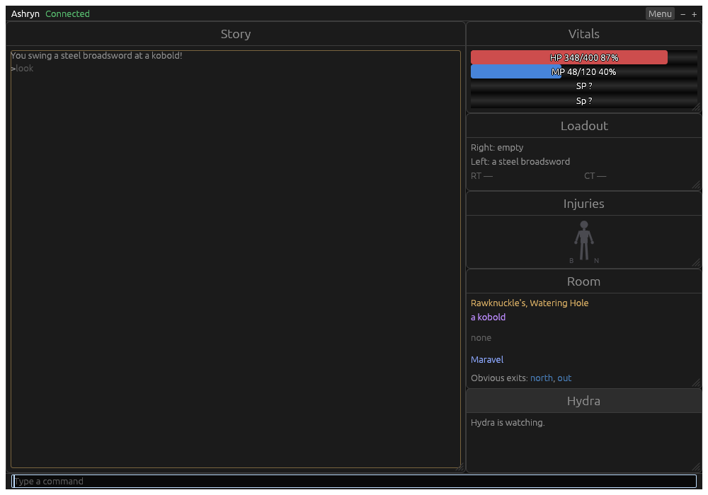
Downloads
Every release is on the releases page:
- Windows:
hydra-windows-x86_64.zip - macOS (Apple silicon):
hydra-macos.dmg, or the barehydra-macos-arm64.zip - Linux:
hydra-linux-x86_64.tar.gz, for glibc 2.39 or newer - iPhone and iPad: HydraFE, through TestFlight
The guide’s pages are coming, group by group: getting started, the play window, playing, and the phone and web page. The API reference is the whole of Hydra’s code, documented, for anyone writing against it.
How Hydra works
Hydra is one program that plays every character you have at once. Its windows are only views onto those characters: close them all and every character keeps playing.
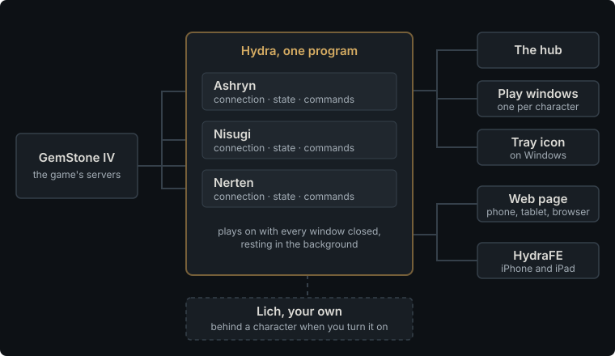
One Hydra, every character
A single Hydra holds every character’s connection to the game. Each character has a session of its own: the connection, everything the game has told it (its vitals, the room, its hands, its effects, its inventory), and the commands waiting to be sent. When a connection drops, Hydra logs that character back in by itself. A character nobody is using is let go once its connection has dropped twice with no command sent between, so an idle character is not logged back in forever.
You start, watch and stop characters from the hub. Each character can have a play window of its own, and several can play side by side.
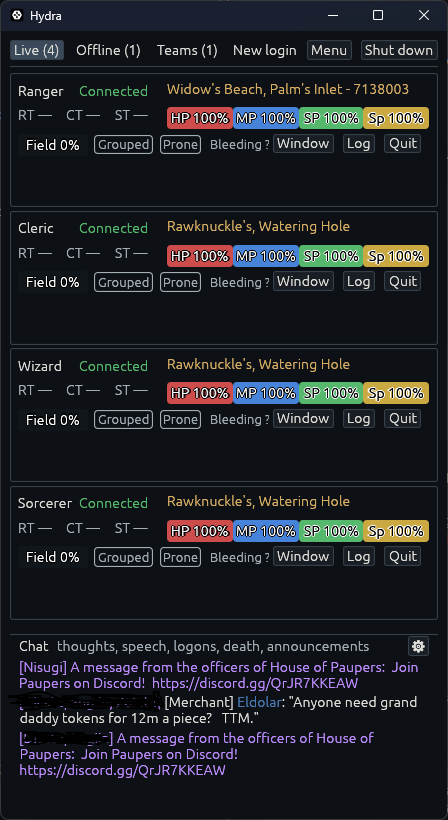
Windows come and go; the characters stay
Closing a play window does not stop its character. Closing the hub hides it while any play window is open. Once every window is closed, Hydra rests: it keeps running in the background, and every character keeps playing.
To bring the windows back, start Hydra again (on a Mac, see Install Hydra). Only one Hydra runs at a time on a set of files, so a second start does not begin another one: it opens the windows of the Hydra already running and leaves. On Windows, Hydra’s icon in the tray opens the hub as well, and Hydra can start by itself, resting, when you sign in.
Shut down, on the hub or the tray, is what ends Hydra: every character quits the game in turn, and then Hydra closes.
While a character plays, Hydra keeps Windows from going to sleep.
Starting fresh
Once the last character has stopped and no window is open, Hydra waits a minute and then starts itself again in the background. That gives back the memory that playing and the windows took, which a program can only hand back by ending. You do not see it happen. The wait is Start fresh after, in seconds, on Hydra’s General page of Settings; 0 turns it off. An update Hydra has downloaded takes over at this point too.
Hydra’s commands and the game’s
Anything you type goes to the game, except lines that start with Hydra’s
command symbol, ., which are Hydra’s own and never reach the game. .help
lists them. If you run Lich, lines that start with ; are Lich’s.
Lich
If you play with Lich, Hydra runs your own Lich behind any character you turn it on for. Hydra keeps the game connection and hands Lich the game’s text, so Lich’s scripts run as they always have, and what you type passes through Lich on its way to the game. Lich never sees your password.
The web page and the phone
Hydra can serve a web page to your home network. A phone, a tablet or another computer opens it in a browser and plays the same characters, from the same sessions, as the play windows show them. Menu › Pair shows its address and a code to scan, and serves it if it is not served yet.
HydraFE, the app for iPhone and iPad, does that too: it finds Hydra on your home network by itself. It can also run Hydra on the phone alone, with no computer, for when you are away from home. Lich does not run on a phone.
Where Hydra keeps its files
Hydra keeps two folders beside where it starts (on a Mac, in Application
Support): data, which holds your settings, layouts, triggers and the
characters it knows; and logs, which holds what each character read, a
file a day. Install Hydra
says where to put them. Passwords are never in either: Hydra keeps one only
when you ask, in your computer’s own keyring.
Install Hydra
Every release is on the releases page, a file for each system. The phone app, HydraFE, comes through TestFlight instead.
These beta builds are not signed yet, so the first time you start Hydra your system warns that it does not know who made it. Each section below says how to let it run.
Where Hydra keeps its files
Hydra makes two folders beside where it starts: data, for your
settings, layouts, triggers and the characters it knows, and logs, for
what each character read. Give Hydra a folder of its own and start it from
there. To move Hydra, move the folder: everything goes with it.
On a Mac, the app keeps them in ~/Library/Application Support/Hydra.
Passwords are not in either folder. Hydra keeps one only when you ask, in your computer’s own keyring.
Windows
- Download
hydra-windows-x86_64.zip. - Extract it into a folder of your own, such as
Documents\Hydra. Not intoProgram Files: Hydra writes its folders besidehydra.exe, and cannot write there. - Double-click
hydra.exe. If Windows says Windows protected your PC, choose More info, then Run anyway.
The hub opens, and Hydra’s icon appears in the tray.
A shortcut to hydra.exe works as well: it starts Hydra in the folder
hydra.exe is in, unless you change its Start in.
Hydra draws its windows with Vulkan where your graphics card has it, and
with DirectX 12 otherwise. If Hydra crashes to the desktop while it plays,
and Windows names your graphics driver, choose DirectX 12 under
Graphics on Hydra’s General page of Settings and start Hydra again. An
overlay such as Overwolf’s, or a recorder’s game capture, hooks into both,
and leaving hydra.exe out of them helps too. DirectX 12 can take half a
minute to open on some computers; that is the other reason to switch.
macOS
Hydra for macOS runs on Macs with Apple silicon (M1 and later).
-
Download
hydra-macos.dmg, open it, and drag Hydra into Applications. -
Open Terminal and let it run, since it is not signed:
xattr -dr com.apple.quarantine /Applications/Hydra.app -
Open Hydra from Applications. The hub opens.
Hydra keeps its files in ~/Library/Application Support/Hydra.
Hydra has no menu bar icon on a Mac. With every window closed it rests in the background and every character plays on. To open its windows again, run this in Terminal:
open -n /Applications/Hydra.app
Linux
Hydra for Linux runs on x86-64 with glibc 2.39 or newer: Ubuntu 24.04 and later, Debian 13, Fedora 40 and later, or another distribution as recent.
-
Download
hydra-linux-x86_64.tar.gz. -
Make Hydra a folder, unpack it there, and start it from there:
mkdir -p ~/Hydra cd ~/Hydra tar -xzf ~/Downloads/hydra-linux-x86_64.tar.gz ./hydra
Hydra needs ALSA for sound (libasound.so.2), speech-dispatcher for spoken
triggers (libspeechd.so.2) and udev for game controllers (libudev.so.1).
Most desktops have them; on Ubuntu or Debian, any missing are installed
with:
sudo apt install libasound2t64 libspeechd2
Kept passwords go into your desktop’s keyring, GNOME Keyring or KDE Wallet. Like on a Mac, Hydra has no tray icon: start it again to open its windows.
Updating
On Windows, Hydra updates itself. It looks for a newer release when it starts and every six hours after. When one is out, the hub says so under its header, with What’s new, which opens the release’s notes, and Update. The tray menu offers the same.
Update downloads the release and checks it before using it: every release is signed, and Hydra refuses a file whose signature or checksum does not match. Once it is ready, the hub says it runs from Hydra’s next start, and offers Restart now.
- Restart now quits every character, the same way Shut down does, and starts Hydra again on the new release, with the hub open. If characters are playing, it names them first and asks. Leave Start them again afterwards ticked and they log back in, each with its team; untick it if you are stepping away. A character whose password is not kept is not logged back in: start it from the hub.
- Or carry on playing. The new release runs the next time Hydra starts: when you start it yourself, or when it starts fresh after a minute with nothing playing (see How Hydra works).
Two switches on Hydra’s General page of Settings control this. Check for updates is on unless you turn it off. Update on its own is off unless you turn it on; with it on, Hydra downloads a new release as soon as it is out, without asking, and it runs from the next start.
Hydra writes the new program beside the old one, so its folder must be one
you can write to; that is another reason not to keep it in
Program Files.
The first beta, 0.1.0-beta.1, cannot update itself. Replace it by hand once, as below, and later releases arrive on their own.
By hand, and on a Mac or Linux
Shut Hydra down first, from the hub’s Shut down or the tray. Then
replace hydra.exe, the app, or hydra with the new release’s. Your
data and logs folders stay as they are.
Log a character in
The first time, you log in with your account, and Hydra lists its characters for you to play. After that, a character starts with a click.
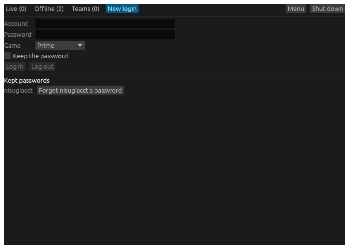
- Start Hydra. The hub opens.
- Choose the New login tab.
- Type your Account and Password, and choose the Game: Prime, Shattered or Prime Test.
- Tick Keep the password if you want Hydra to start this account’s characters without asking for it again. It is kept in your computer’s keyring (Credential Manager on Windows, the Keychain on a Mac, GNOME Keyring or KDE Wallet on Linux), and only once the game has accepted it.
- Choose Log in. Hydra asks the game for the account’s characters and lists them under the form.
- Choose Play beside a character. Hydra logs it in and opens its play window.
Once the game has let a character in, it is on your roster: the characters Hydra knows, listed on the hub’s Offline tab whenever they are not playing. Add puts a character on the roster without playing it, and the star marks a favourite, which is listed first.
The next time
Open the hub’s Offline tab. A character whose password is kept has Start. One without has a password box, its own Keep box, and Log name in. On Windows, the tray’s Start a character starts any character whose password is kept.
Forgetting
Forget on a character’s card takes it off the roster. Under Kept passwords on the New login tab, the Forget button beside an account takes its password out of the keyring.
Log out on the New login tab clears the account the form logged in, and its list. Characters already playing go on playing.
The hub
The hub is where characters are started, watched and stopped. It opens when Hydra starts, and closing it never stops a character.
Its tabs
- Live: a card for each character playing, or reconnecting. A card shows the character and its connection, its health, mana, stamina and spirit, its roundtime, room and group, and Window, Log and Quit. The Chat card beside them gathers what every character hears on the shared channels (thoughts, speech, arrivals, deaths and announcements), each line marked with who heard it. Its ⚙ chooses the channels and the characters.
- Offline: first the characters that stopped this run, with why, and Reconnect, Remove or Log. Then the rest of your roster, favourites first, each with Start or a password box.
- Teams: characters started together with one click. See Start a team.
- New login: an account’s characters, and the kept passwords. See Log a character in.
A card’s Window opens that character’s play window, or brings it to the front. Log opens what the character has read. Quit quits the game.
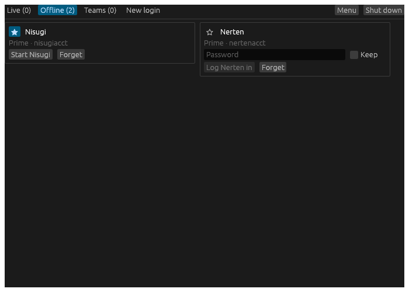
The Menu
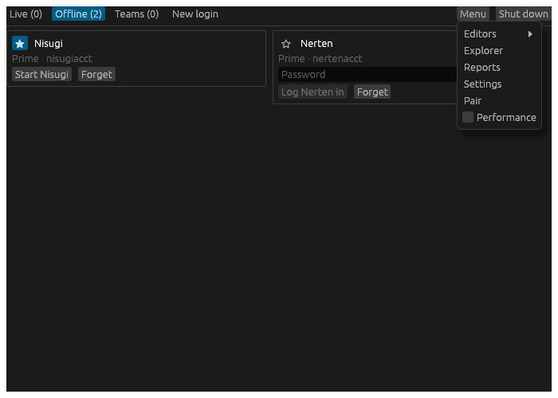
Every play window has a Menu on its title bar too, so either one reaches everything with the other closed.
- Editors: a list of every editor, each a page of the Editors window: Keybinds, Macros, Aliases, Hotbars, Themes, Triggers, the Controller, Packs, Icons and Cards. Cards is the design every character’s card is drawn from, which parts it shows and where. A trigger answers what the game says: it colours or hides a line, plays a sound, shows a banner, starts a timer or sends a command. Packs are pictures to fetch: frames, the Injuries doll, compasses. From a play window, an editor works for its character.
- Layout, on a play window: add a widget or a custom window, lay the windows out afresh, switch Arrange and Lock, set the Grid windows snap to, how strongly its Grid lines show and the Veil over a custom window’s cells while arranging, and Title bar settings, Settings at the window’s title bar.
- Logs, on a play window: what its character has read.
- Explorer: the Map Explorer, the whole map and where every character stands, and the bestiary.
- Reports: every report the ledger answers.
- Settings: Hydra’s own settings, and every character’s. From a play window, Settings opens on that character.
- Pair: a window with the web page’s address and a code for a phone’s camera to scan, and Copy for the address. While the web page is not served, it says so and Serve it switches it on, as the Web page switch on Hydra’s General page in Settings does.
- Performance, on the hub: each live card’s timings, for when something feels slow.
A new play window’s title bar shows its character, how it is connected, the Menu and the zoom’s − and +. Anything the Menu holds can be put back on the bar as a button of its own – Lock, Arrange, the Layout, Keys and Drawers menus, Log, Settings – and so can an icon for each drawer, lit while it is open: on the character’s Window page in Settings.
Settings chooses how things behave; the Editors window is where things are made. Settings lists its pages down its side; the Editors window has its editors as tabs along its top. Its For, at the end of that row, picks whose keys, macros, hotbars and controller its pages work on: every character’s, or one character’s own.
Shutting down
Shut down quits every character in turn and closes Hydra. With any character playing, it asks first: Shut Hydra down? Every character will quit.
Closing the hub’s window is not shutting down. It only hides the hub while a play window is open. With none open, Hydra rests in the background and every character plays on. Start Hydra again, or use the tray on Windows, to bring the hub back.
Start a team
A team is a set of characters started together with one click: a hunting party, or everyone you log in each evening.
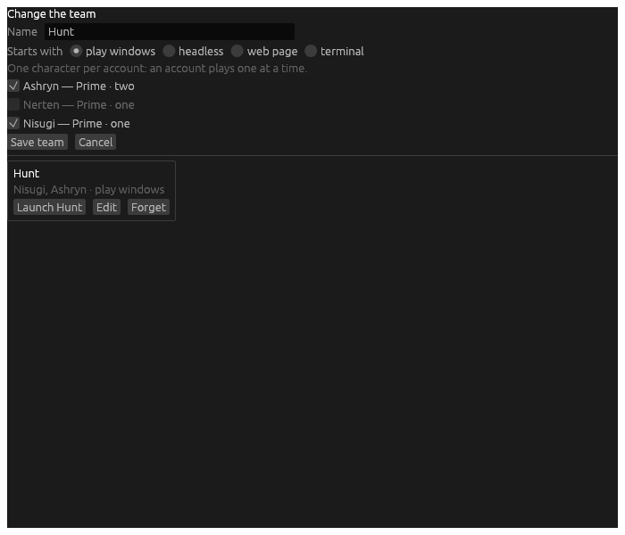
- On the hub’s Teams tab, choose New team.
- Give it a Name.
- Choose what it Starts with:
- play windows: each character’s play window opens. If Hydra was resting, only those open, and the hub stays hidden.
- headless: no play window. A character’s card opens one when you want it.
- web page: no play window on this computer, and the web page is served for them, for playing from a phone or another computer.
- Tick its characters. An account plays one character at a time, so a team takes one character per account.
- Choose Save team.
Launch starts every character in the team. Edit changes the team, and Forget removes it.
A team’s characters start with their kept passwords, so keep each one’s password first (see Log a character in). A character whose password is not kept is left out, and the hub says so. On Windows, the tray’s Start a team starts a team too.
Hydra in the tray
On Windows, Hydra’s icon sits in the tray for as long as Hydra runs, its windows open or not. Hovering it says how many characters are playing.
A click on the icon opens the hub. Its menu:
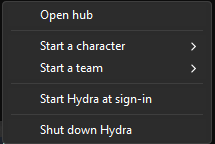
- Open hub.
- Start a character: every roster character whose password is kept.
One already playing is marked
*, and choosing it brings its window forward. - Start a team: your teams.
- Start Hydra at sign-in: Hydra starts by itself, resting, when you sign in to Windows, with its files in the folder it is running from now. Untick it to stop that.
- Shut down Hydra: every character quits the game, and Hydra closes.
A character or team started from the tray opens its play windows and leaves the hub as it is.
On a Mac or on Linux there is no tray icon. Hydra rests in the background in the same way, and starting it again opens its hub; on a Mac, see Install Hydra for how.
Run your own Lich
If you play with Lich, Hydra runs your own Lich behind each character you turn it on for. Hydra keeps the game connection and hands Lich the game’s text, so your scripts, settings and aliases work as they always have. Lich never sees your password.
What you need
- Lich, installed: a folder with
lich.rbwin it. - Ruby, which Lich runs on. On Windows, Lich’s installer puts it in
C:\Ruby4Lich5, where Hydra finds it. Otherwise Hydra uses therubyon your PATH.
Turn it on
Type these in a character’s play window:
.lich folder <folder>, once: where your Lich is, for example.lich folder C:\Lich5. It holds for every character..lich on: Lich starts for this character now, and again every time the character starts. It starts once the game has let the character in, so logging in is no slower.
.lich off stops it and leaves it off. .lich alone says whether it runs
and where Lich is.
Typing with Lich
- A line starting with
;is Lich’s own command:;repository,;kill bigshot. - A line starting with
.is Hydra’s. - Anything else goes to Lich first, so its aliases and hooks see it, and Lich sends it on to the game.
Lich’s symbol is ; unless you choose another: Lich command symbol, on
a character’s General page in the settings.
What the window shows
.lich view lich, as it starts: what Lich shows. Its squelches hold, and its scripts’ messages appear in the story..lich view game: the game’s own text, with Lich’s lines beside it.
.stop stops everything on the character at once, Lich’s scripts
included.
Lich does not run in HydraFE’s own Hydra on a phone.
Bring your setup from Wrayth, Vellum or the Wizard
Hydra reads what Wrayth and Vellum keep, so your keys, highlights and bars
come with you. Some of it comes over with a command typed in a play window,
some by copying a file into Hydra’s data folder.
Each command answers in the play window: how many came over, and every one that did not, with why.
Keys
.keys import <file> brings another front end’s keys into this
character’s keys. Add global to bring them into every character’s:
.keys import global <file>.
-
Wrayth: a Wrayth settings file. Its ten macro sets come into Hydra’s sets 0 to 9.
-
Vellum: a
keybinds.toml, or a set you saved with Vellum’s.savekeybinds. Or give it your whole Vellum folder,.vellum-fein your home folder:.keys import C:\Users\you\.vellum-feIts global keys come into every character’s, and each character’s own into that character’s, for every character Hydra knows by that name.
Vellum writes its own default keys into your file, so the import leaves those to Hydra: only the keys you made yourself come over. Tab, for one, keeps targeting the next creature, as it does in Hydra.
What a key does comes over too: commands sent, the history, scrolling, Find, the tabs, targeting. A key that does something Hydra’s keys have no action for is named in the answer, and so is a key that would type a letter: a key bound in Hydra holds Ctrl, Alt or Cmd, or is one that types nothing, like F5.
Keys you bring in show on the Keybinds page of the Editors window, where you change them like any other.
Triggers
.trigger import <file> brings highlights in as triggers.
- Wrayth: a Wrayth settings file’s highlights, names and ignores.
- Vellum: a
highlights.toml, or the whole.vellum-fefolder, every character’s at once.
Importing the same again replaces what it brought rather than adding a second copy. Triggers you bring in show on the Triggers page of the Editors window: Wrayth’s in the categories Wrayth strings, Wrayth names and Wrayth ignores; Vellum’s in their own category, or Vellum when they had none.
Hotbars and the controller
Hydra reads Vellum’s hotbars.toml and controller.toml as they are:
copy them, no command needed.
| Vellum keeps | Copy it to |
|---|---|
.vellum-fe\global\hotbars.toml | data\hotbars.toml, every character’s |
.vellum-fe\global\controller.toml | data\controller.toml, every character’s |
.vellum-fe\profiles\Ashryn\hotbars.toml | data\layouts\prime_ashryn.hotbars.toml, Ashryn’s own |
.vellum-fe\profiles\Ashryn\controller.toml | data\layouts\prime_ashryn.controller.toml, Ashryn’s own |
A character’s own files are named for the game and the character:
prime_ on Prime, shattered_ on Shattered. Hydra reads the hotbars
files again within a second of one changing, so a bar copied in shows at
once; .controller reload reads the controller files again.
The Injuries doll
.doll import <folder> brings a folder of doll pictures into Hydra’s
dolls folder, each with the calibration Vellum keeps beside it. Pick one
on the Injuries widget’s page.
From the Wizard
.wizard import <folder> brings a Wizard front end folder in, looking one
folder deep as an unpacked archive is laid out; .wizard import global <folder> makes the aliases everyone’s and the keys every character’s, for
a player whose characters all share them:
- Scripts (
.Cmd,.Wiz) become this character’s aliases, each named for its file with the dot in front, typed as the Wizard ran it:s.Cmdbecomes.s, andsalone still goes south.putlines are the commands,pause 2a two-second wait,waitrtthe roundtime,%1and%2the first and second word typed after the alias (.s sword back). A script that runs another (put .nexus) gets that script’s lines in its place. A script that is one loop, a label at the top and a jump back to it after a pause, becomes the alias of its lines, and the import says to run it on the clock:.every 60 .acorn. A.Wizwhose name a.Cmdalso has is named<name>-wiz. A script that matches text, jumps elsewhere or keeps a counter needs Lich, which runs Wizard scripts as they are, and is named, not imported. A script named like one of Hydra’s commands still comes in, and its alias wins:.go2runs the script, not Hydra’s travel, and the import says so. When a later Hydra brings a command named like one of your aliases, the alias keeps winning, and Hydra says so once, the first time the character logs in. Importing again takes away the aliases an earlier import brought in without the dot, those you have not changed. - Macros (
.Mac) become this character’s keys: Alt and Ctrl letters, and the keypad with or without a modifier. A macro that places the cursor (@), prompts (\?) or uses one of the Wizard’s own{tokens}is named, not bound. - Highlight strings and names (
.His,.Nam) become everyone’s highlights, in the categories Wizard strings and Wizard names, each in its colour from the profile’s.Colorspalette, or the Wizard’s own sixteen without one. A string the Wizard marks with a leading$paints its whole line.
Your scripts
Lich comes with you whole: Hydra runs your own Lich behind each character you ask it to, with your scripts and their settings. See Run your own Lich.
Triggers
A trigger watches what the game says. When a line holds the words you gave it, it acts: it colours the words, hides the line or writes it another way; it plays a sound, shows a banner or a notification, speaks, rumbles the controller or places a picture; it starts a timer, sets a flag or a status, or sends commands to the game. A line is moved to a window of its own by a stream rule. A trigger can watch your character instead of the text, and act when its health falls under half.
This chapter goes through the editor, then how a trigger finds its line, everything it can do, and examples of each kind, each with a line from the game to try it on.
Where they are
Open Menu › Editors › Triggers, on the hub or on any play window’s title bar: the Editors window opens at it.
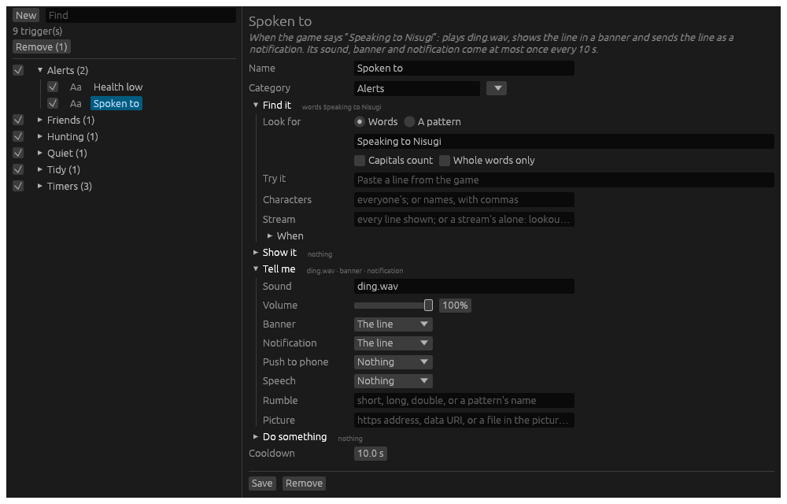
On the left, every trigger, by category:
- The tick beside a trigger switches it on or off. The tick beside a category switches every trigger in it.
- Find narrows the list to triggers whose name, category or words hold what you type.
- Aa shows a trigger’s colours.
- Click a trigger to open it in the form.
A new trigger
New asks what the trigger should do, and starts one ready for it.
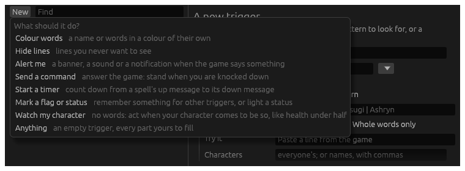
| Kind | Starts with |
|---|---|
| Colour words | a colour, to change |
| Hide lines | the line hidden |
| Alert me | a banner of the line |
| Send a command | Do something open |
| Start a timer | Do something open |
| Mark a flag or status | Do something open |
| Watch my character | no words; health under half, shown in a banner |
| Anything | nothing at all |
Whichever you start from, every part of a trigger is there to use.
The form
At the top, a sentence says what the trigger does as it stands, and follows every change you make:
When the game says “Speaking to Nisugi”: plays ding.wav, shows the line in a banner and sends the line as a notification. Its sound, banner and notification come at most once every 10 s.
Read it before you save: it is the quickest way to see a trigger does what you meant.
Then its Name, and its Category: type a new one, or pick one from the list beside it. Under them, the trigger’s parts in four sections:
- Find it: what it looks for, a line to try it on, whose it is, and when it may act. See Finding the line.
- Show it, Tell me and Do something: what it does. See What a trigger does.
A folded section says what is in it, or nothing. A trigger opens with the sections it uses open.
Save keeps it, and it works at once on every character it is for. Remove takes it away.
From the command line
.trigger help in a play window lists what the command does:
.trigger list: the categories;.trigger list <words>, the triggers whose name, category or words hold them..trigger on <name>and.trigger off <name>: a trigger, or a whole category..trigger remove <name>: take a trigger away..trigger import <file>: bring in Wrayth’s or Vellum’s highlights; see Bring your setup.
.highlight is another name for .trigger. Triggers are kept in
highlights.toml, in Hydra’s data folder.
Finding the line
Find it says what a trigger looks for in each line the game sends, and when it may act.
Words
Choose Words and type what to look for, as the game writes it:
Speaking to Nisugi. It is found anywhere in a line.
- Several, with
|between them:Tevye | Zelasfinds either. - Capitals count: off,
nisugifindsNisugitoo; on, only as written. - Whole words only: on,
BobfindsBob wavesbut notBobby waves.
To look for a | itself, use a pattern: \|.
A pattern
Choose A pattern to look for a shape rather than words: any number, any name. A pattern is a regular expression. The few marks most triggers need:
| Write | It finds |
|---|---|
\d+ | a number: 2, 150 |
\w+ | a word: Tevye |
.* | anything, or nothing: says, "(.*)" keeps all that was said |
s? | an s, or none: rounds? finds round and rounds |
^ and $ | the start and the end of the line |
( ) | a group: what it finds is kept, as $1, the next as $2 |
\. \( \[ \? | the mark itself, where a pattern would read it as one of its own |
You are stunned for (\d+) rounds?! finds You are stunned for 2 rounds!, and keeps 2 as $1.
What a group keeps fills in Write instead, Send, and a timer’s
Up message says: $1 is the first group, $2 the second.
Try it
Paste a line from the game into Try it, and see at once what the trigger makes of it: the line as it would show, what the pattern caught, and everything it would do.
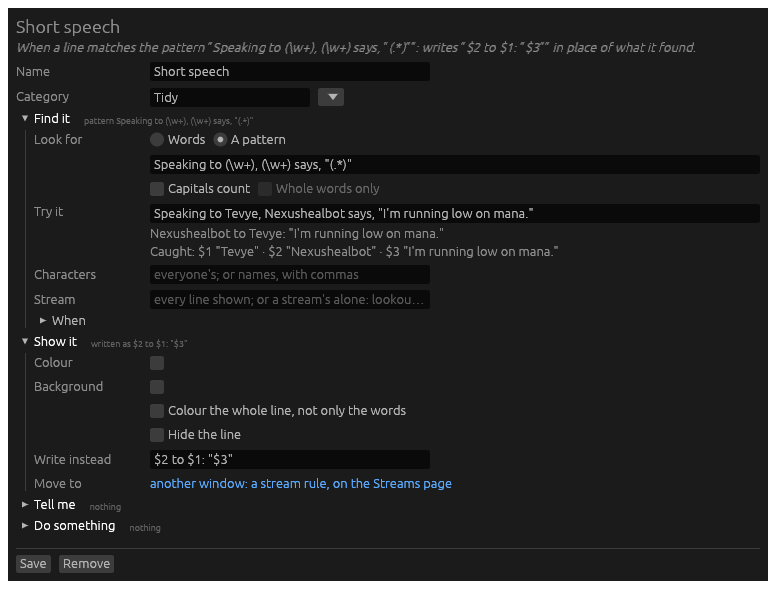
When it says It does not match this line, change the words or the pattern until it does. A trigger with a condition under When is tried as if the condition held.
Characters
Empty, a trigger is every character’s. To keep it to some, name them,
with commas: Ashryn, Nisugi. A name alone is that character on any game;
GS3:Ashryn is Ashryn on Prime alone, GSF:Ashryn on Shattered.
When
When keeps a trigger to times your character is so: a line found at any other time is left as it is. Open it and add a condition:
- vital: health, mana, stamina or spirit, above or below a number or a percent.
- roundtime or casttime: under way.
- stance: offensive, defensive, and those between.
- indicator: standing, kneeling, stunned, hidden, webbed, and the rest the game shows; a status a trigger lights reads here too.
- effect up, effect not up, effect time left: a spell or an effect on you.
- injury, hand empty, hand holds, spell prepared, spell affordable, time of day, room, creature status.
- flag: a flag a trigger set (see Flag).
not turns a condition over. + group gathers conditions: Every one of holds when they all do, Any one of when one does.
A condition alone
Leave the words empty and the trigger watches your character alone: it acts each time its condition comes to hold. Health falling under half is one; see Watch your health.
Again only once it has not held for keeps a condition that flickers from acting over and over: it acts again only once the condition has been gone that long. 3 seconds unless you change it.
What a trigger does
A trigger does whatever its sections hold, all at once, each time it finds its line. Leave a part empty and it does not do that.
Show it
What happens to the line itself.
- Colour and Background: tick to colour what the trigger found, then click the swatch to choose the colour.
- Colour the whole line, not only the words: the colours go on every word of the line.
- Hide the line: the line is not shown. Its sound, banner and notification still come.
- Write instead: what the trigger found is written as these words.
The rest of the line stays.
$1,$2put in what a pattern’s groups caught:$2 to $1: "$3"turns a long line of speech into a short one. - Move to: a line goes to another window by a stream rule, not a trigger; the link opens the Streams page.
Tell me
How the trigger gets your attention.
- Sound: a sound file’s name, a
.wav,.mp3,.oggor.flacin thesoundsfolder in Hydra’sdatafolder. The file name alone:ding.wav. - Volume: how loud, a percent of the window’s volume. It shows once a sound is named.
- Banner: a banner under the play window’s top bar for a few seconds: The line, or These words of your own.
- Notification: a notification from your computer, as other programs send: the line, or your own words.
- Push to phone: a banner on each phone paired with Hydra in the
HydraFE app, even with the app closed: the line, or your own words.
Tapping it opens HydraFE on that character (Push to phone).
.pushlists the phones,.push testsends one to try it, and.push forget <name>stops one. - Speech: your computer’s voice reads the line, or your own words.
- Rumble: the game controller rumbles:
short,long,double, or a pattern of your own from the controller’s file. - Picture: a picture placed in the story after the line: an
https://address, or a file in the pictures folder set on the Hydra’s General page of Settings.
Several characters hearing the same line within a second, a shout in a room they share, make one sound, one notification and one voice, not one each.
Do something
What the trigger does beyond the line.
Send
Game commands, one a line, sent as if you typed them. A pattern’s $1
can fill a command’s words: target $1. Some care is built in:
$1fills a command’s words, never the command itself.- Only game commands: never Hydra’s own or Lich’s.
- Only once the character is in the game and ready: nothing while it logs in or reconnects.
- The trigger’s Cooldown is the pace of its sends: at
0it sends for every line it finds. - A send that an import brought waits until you read it and press Approve this send.
Timer
A countdown of your own, which the Timers widget shows.
- Timer: its name. The words the trigger finds start it.
.timer <name>starts it too. - Default duration: how long it runs.
- Up message says: when the line says how long,
$1with a pattern’s first group, times a number:$1times5for a line that counts rounds of five seconds. The default duration is used when the line says none. - Down message: words that end it early, such as a spell’s message that it has worn off.
- Shows in: which list it counts down in, Active spells, Buffs, Debuffs, Cooldowns, or Custom. The Timers widget gathers every list.
Flag
A flag is a name a trigger sets and other triggers read: it shows nowhere. Under When, the condition flag holds while it is set.
Name it, and choose how long it lasts: set for some seconds, or 0
until something clears it. Tick clears it to make a trigger that puts
the flag down instead.
Status
A status is like a flag, but it shows: the Custom statuses widget lights it while it is set, and under When the condition indicator reads it as it reads the game’s own. Set and clear it as you would a flag.
Cooldown
Under the sections, when the trigger has something to hold back: Cooldown is how long before its sound, banner, notification, push, speech, rumble, picture, timer and commands come again. 3 seconds unless you change it. A line the trigger finds while it cools down is still coloured, hidden, rewritten and moved, and its flag and status are still set.
Examples
Each example is a trigger made from New, shown with a line from the game pasted into Try it, so you can see what it does before it ever meets the game. Change the names and words to your own.
Colour your friends’ names
New → Colour words. Look for the names, with | between them, and
tick Whole words only, so Tevye does not light up inside another
word. Choose the colour under Show it.
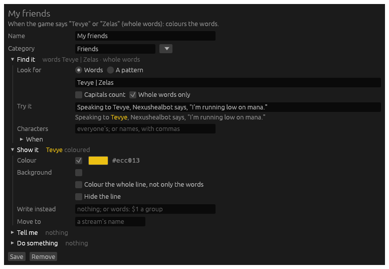
Hide lines you never want to see
New → Hide lines. Look for words every such line holds. Lich’s LNet
chat starts each of its lines with [LNet].
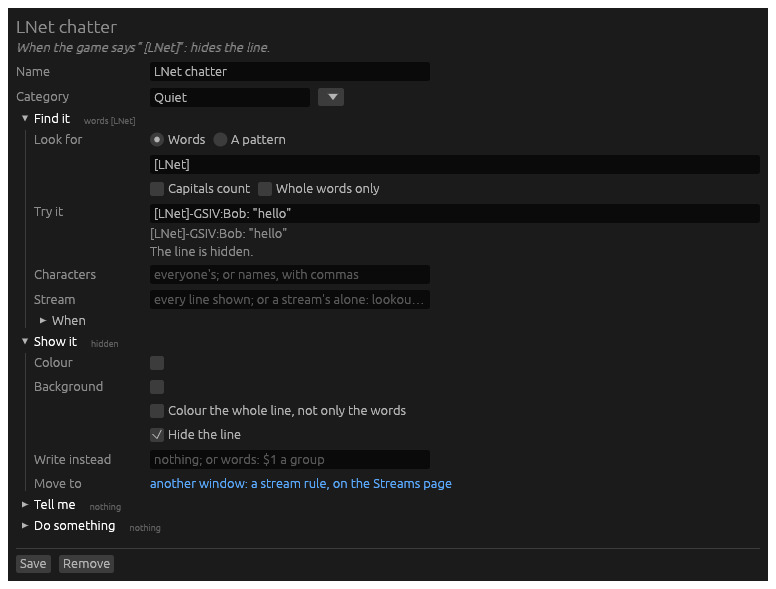
To keep the chat, but out of the story, move it instead: see Give a chat its own window.
Know when someone speaks to you
New → Alert me. The game writes speech meant for you as Speaking to <you>, <them> says, so look for Speaking to and your name. Under
Tell me: a sound, a banner of the line, and a notification, so it
reaches you with Hydra behind other windows. A cooldown of 10 seconds
keeps a long talk from ringing on every line.
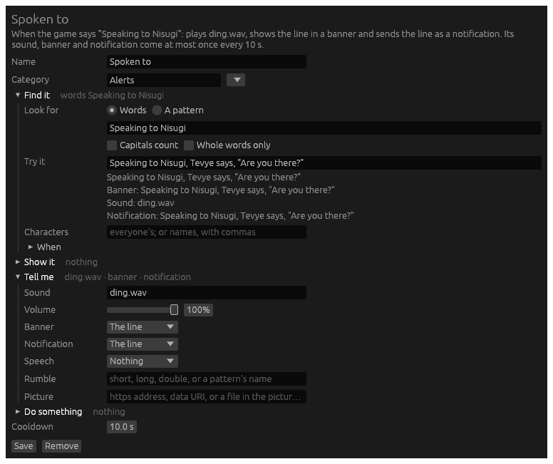
Count down a stun
New → Start a timer. The game says how many rounds: You are stunned for 2 rounds!. A pattern keeps the number, (\d+), and the
timer runs $1 times 5 seconds. Under Tell me, speech says
Stunned, for when you are looking elsewhere.
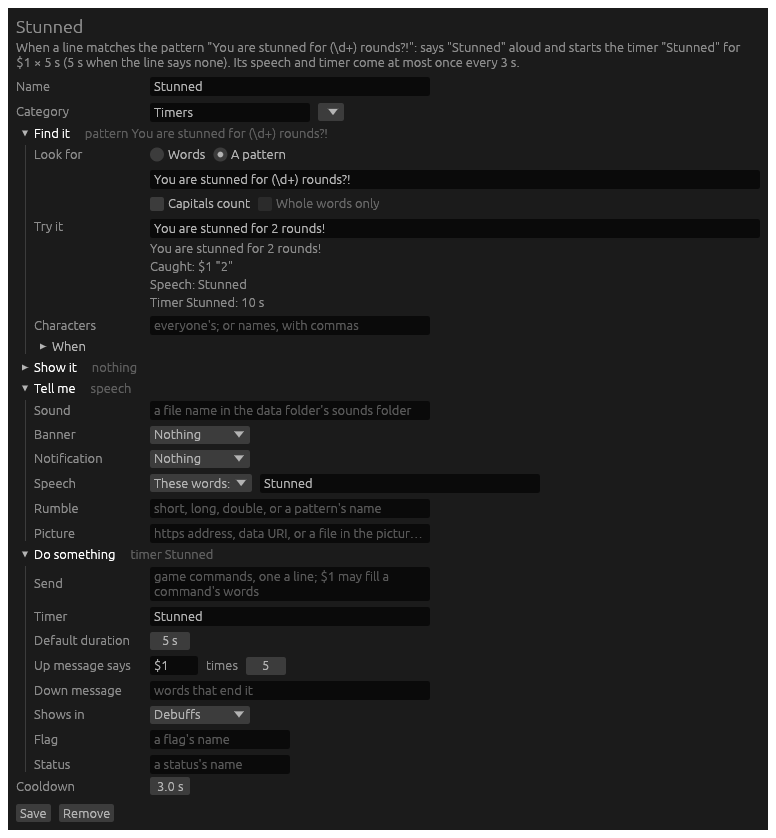
It counts down in the Debuffs list, and in the Timers widget, which gathers every list.
Time a spell
New → Start a timer. Look for the spell’s message as it comes up,
A light blue glow surrounds you., and give the timer as long as your
casting lasts. Down message ends it when the spell wears off early:
The light blue glow leaves you.
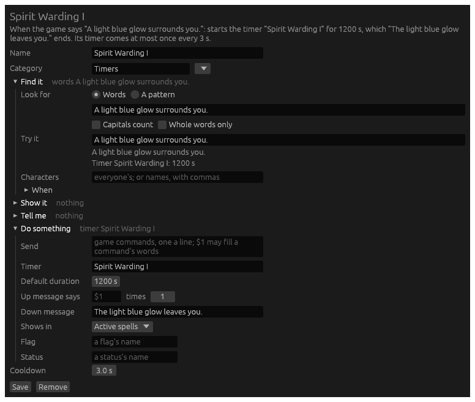
Shorten a long line
New → Anything. A pattern takes the line apart into groups, and Write instead puts it back together, shorter:
| The game | The story |
|---|---|
Speaking to Tevye, Nexushealbot says, "I'm running low on mana." | Nexushealbot to Tevye: "I'm running low on mana." |
Give a chat its own window
That is a stream rule, not a trigger: right-click an
[LNet] line, choose Send lines like this to… and A stream of
your own…, and name it lnet. Once the rule is saved, the play
window’s Menu › Layout › Add a widget offers an lnet window, under
Streams.
Answer the game
New → Send a command. When your spell is ready, cast it:
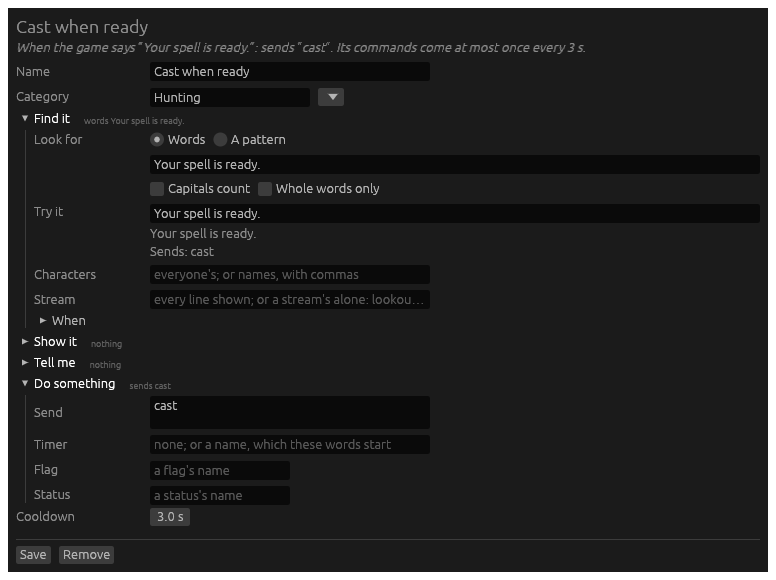
A trigger sends only once the character is in the game and ready, never
while it logs in. Its Cooldown, 3 seconds unless you change it, is the
pace of its sends: at 0 it sends for every line it finds.
Watch your health
New → Watch my character. There are no words to look for: under When, the condition vital health < 50 % is the whole trigger. It plays a sound and shows Health is low each time your health falls under half. Try it has no line to try: the sentence at the top says what it does.
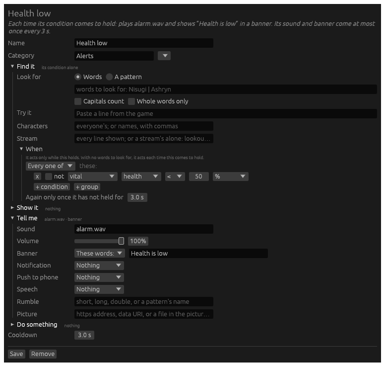
Light a status while a spell lasts
Two triggers: one lights a status, one puts it out. New → Mark a
flag or status, look for the spell coming up, and name the Status:
Warded.
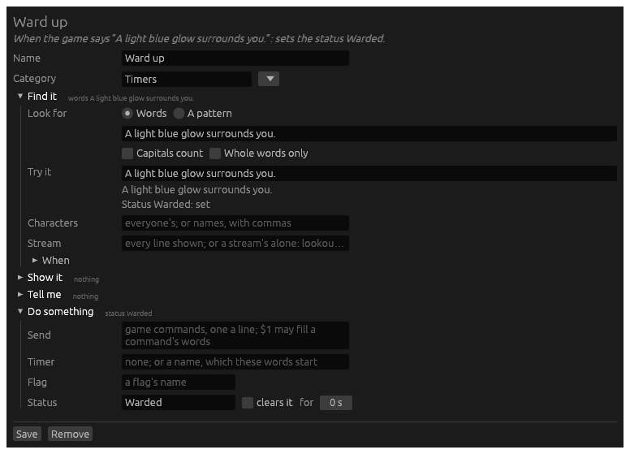
Then a second, looking for The light blue glow leaves you., with the
same status and clears it ticked. The Custom statuses widget
shows Warded while the spell lasts, and any trigger can ask for it
under When: indicator Warded. A flag works the same way, but shows
nowhere: it is for other triggers alone.
Streams
The game sends each line to a stream: most to the story, some to Thoughts, Speech, Arrivals and the rest, each a window you can add. Stream rules change where a line goes: a line the game puts in the story that belongs with the ambients, or lines you want in a window of their own, such as your fights.
A rule finds its lines and sends them to a stream. It moves them, out
of where the game sent them, or copies them, so they show in both. The
rules are one list for every character, kept in stream_rules.toml in
Hydra’s data folder, and tried in order: the first that matches a line
sorts it.
The log follows the rules too: a line a rule moved is written as
main/ambients, where the game sent it, then where it went.
Fights in a window of their own
One rule is built in: Combat copies every line of the story that comes
while you fight to a stream named combat. Add its window from the play
window’s Menu › Layout › Add a widget, under Streams; the story keeps
the lines too. Edit the rule, or switch it off, on the Streams page. To
take fights out of the story, untick Keep fights in the story on the
combat window’s right-click menu.
A script’s attacks go with their fight: bigshot’s fire, cman or
incant, as Lich echoes them, when the answer was a fight. Each command
goes with the answer it got, however long that took: two sent at once are
answered one after the other, and each goes with its own. A gemstone list
or a cman that answers with no fight stays in the story. A stance or a
target, yours or a script’s, goes to combat with its answer while a hostile
creature is in the room. Your own typed attacks stay where you typed them.
The rule lists the words it goes by: Script attacks and Setting up,
shown while there is fighting is ticked.
A fear that makes you flee comes in one piece with the room you fled to. The fight goes where fights go; the room always stays in the story, so it still says where you are.
Searches and skins in a window of their own
A second rule is built in: Loot copies every line of a search or a
skin to a stream named loot, the creature fading away and the prompt with
it, and the loot, search or skin that asked for it, yours or a
script’s. Nothing leaves the story. The weapon swaps around a skin are no
search or skin, and stay where they are. A rules file made before the Loot
rule was built in is given it once; delete it on the Streams page and it
stays gone. Its condition, a creature is searched or skinned, is one any
rule can ask for.
Fights in the story
Each fight can be shown in the story as the game said it, told briefly, or left out, chosen apart for your own attacks, your other characters’, other players’ and creatures’. Told briefly, a fight is the attack’s first line, then for each target its rolls and its flares, the damage it took on the line that ended its turn, and how it was left:
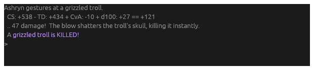
The combat window always has every line as the game said it. By default your own attacks and creatures’ are shown in full, and your other characters’ and other players’ are told briefly.
Choose on the Fights pages of the settings menu. Fights for every character sets them for everyone; a character’s own Fights page shows each as it is for that character, and a choice made there is that character’s alone until you put it back. Both pages also say whether fights and searches stay in the story as well as their windows: for every character that is the Combat and Loot rules’ own choice, and a character can choose otherwise for itself. Show the rolls and Show the flares leave a brief fight’s roll lines or flare lines out.
Lines no reader knows
Hydra knows a fight from the attacks and their rolls, a search or a skin
from what it found. Some lines come with neither: a briar lashing a
creature, a hail of arrows still falling. Hydra learns these from the
fights it does know. Each sentence the game says is counted under what it
came with, a fight, a search or skin, or something else known, such as the
answer to a look. A line seen often enough only with fights takes its
lines to combat when it comes alone; seen with fights most of the time, it
is copied there and stays in the story too. A line seen with anything else
keeps its lines where they are.
When Hydra gets one wrong, right-click the line in the story or the combat
window and choose Part of this fight or Not part of this fight.
Lines like it go that way from then on, whatever was counted. Each choice
is kept in chunk_marks.toml in Hydra’s data folder, with the line, the
character, its player log and the time.
What Hydra counted is kept in chunk_kinds_prime.bin (one for each game)
beside it. To count afresh from every recording in the logs folder, shut
Hydra down and run hydra chunks learn. Your choices are kept.
Send a line somewhere else
Right-click the line, in a play window or in the log, and choose Send
lines like this to…, then the stream, or A stream of your own….
The Streams page opens with a rule made from the line: its words as they
are, but the names in it and its numbers loosened, so it takes the lines
like it. A grey warg howls 3 times. becomes a rule for any creature
howling any number of times.
The rule is not kept until you Save it. Look it over first: Try it holds the line, and says whether the rule’s words find it.
The Streams page
Open Menu › Editors › Streams.
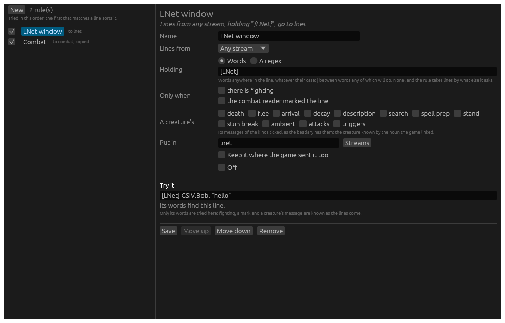
On the left, every rule in the order they are tried. The tick switches a rule on or off. A rule Hydra cannot use says not used; point at it to read why.
On the right, the rule chosen, or a new one from New:
- Lines from: the stream its lines come from: the story, one of the game’s, or any.
- Holding: Words anywhere in the line, whatever their case, with
|between words any of which will do; or A regex, a regular expression, where capitals count unless it starts(?i). - Only when: there is fighting, or the combat reader marked the line: a flare, a status landing on you, a killing blow.
- A creature’s: a creature’s own messages of the kinds ticked, its ambient flavour, its arrival, its death and the rest, as the bestiary has them.
- Put in: the stream: one of the game’s, or a name of your own. A stream of your own is offered in Add a widget, on the chat card and on the phone page as soon as a rule names it.
- Keep it where the game sent it too: the line is copied, not moved.
A rule needs everything it asks for to hold. Move up and Move down change the order. A new rule goes first, so it comes before the broad ones.
Past days in the log
The log keeps each line as it was written. A line written before a rule that takes it was made shows in the log window in the rule’s stream all the same, in a search and an export too: the rules sort it again by its words as it is read. A rule that asks whether there was fighting, or for the combat reader’s mark, cannot be tried on a past line, and is passed over.
Triggers that moved lines
A trigger does not move its line: the stream rules do. A trigger that did, from Hydra before or brought from Vellum, is made a stream rule when Hydra reads it, under its own name, and the Streams page tells you so. Its other parts stay with the trigger, and a trigger that did nothing but move its line goes. A rule made this way is every character’s, whoever the trigger was for.
Travel
Hydra walks a character anywhere its built-in map reaches: .go2 bank
takes the nearest bank, .go2 228 a room by number, .go2 to Ashryn the
room one of your other characters stands in. The way is priced for this
character: an exit that needs a spell it cannot cast, a society it is not
in, or a setting it has not turned on is shut, and the route goes round
it. The walk stops with .go2 stop, or with .stop, which stops
everything.
Every travel command may be shortened to its first two letters or more:
.go is .go2, .ro is .route2, .sa is .sail.
Going somewhere
| Line | What it does |
|---|---|
.go2 bank | Walk to the nearest place of that name: bank, town, gemshop, pawnshop, inn, and every tag the map carries. |
.go2 228, .go2 u7120 | Walk to a room, by the map’s number or the game’s. |
.go2 to Ashryn | Walk to the room another character running in this Hydra is in. |
.go2 targets | The places there are to go. |
.go2 stop | Stop walking. |
.go2 coverage | How much of the map Hydra walks yet. |
.go2 confluence | Into the Elemental Confluence by an instability of your element; confluence-hot or confluence-cold for that half. .go2 instability stops at the instability; --instability=<room> picks which. |
.go2 help | All of these. |
Before the first step Hydra asks the game what the map needs to know and nothing has said yet – the spells you know, what is in your hands, where your ship lies – quietly, and once. A walk that cannot start says why in the story.
Names of your own
| Line | What it does |
|---|---|
.go2 save den | This room is den, for this character. |
.go2 save den --global | …for every character. |
.go2 save den=228,current | den is these rooms; the nearest is meant. |
.go2 list | The names you have saved. |
.go2 delete den | Forget it; --global for everyone’s. |
Names are kept in travel.json in the data folder: everyone’s at the top,
each character’s under its own entry, with the room it was last known in
and what earlier crossings taught it (which town it entered Duskruin from,
for instance). A character’s own name is looked for first. A file Hydra
cannot read, or that a newer Hydra wrote, is left alone rather than
written over: what is in it the game never teaches again.
Seeing the way first
.route2 bank shows the way and sends nothing: room by room, what would
be taken, each scripted crossing as its steps, and at every room what was
not taken and why – a fact the game has not told yet, a setting that
says no, a crossing Hydra does not walk yet. The same route is drawn on
the minimap; .route2 clear takes it off. --brief gives it in a line,
which is what a click on a minimap room asks; a click on the route’s goal
walks it.
Sailing
A character with a ship of its own sails it. .sail kraken makes the ship
ready and takes it to that port; .sail 7143382 to a room of the ocean,
anchor dropped; .sail help lists the ports and how far each is.
Making ready is read off the ship each time, never run as a script: the
white flag from the crow’s nest, the gangplank in, the sail let out and
wind called into it by a character who can, the anchor up, and DEPART.
Start it anywhere aboard or on the pier, with any of it already done, and
it does what is still undone. At sea the wheel is touched only where the
course bends; between rooms the character is free to walk the ship, and is
given a moment to come to the wheel or the anchor itself before Hydra
walks it there. A swell that drops the anchor, a sail come loose, a wheel
spun free are each seen and set right.
.sail route kraken shows the course on the chart as you sail it yourself
and sends nothing.
The ships a character owns and the port each is docked at are kept in
travel.json once seen, so a route by sea needs no ship info asked
again at the next login. A route that may take the ship asks for it
quietly the first time, when nothing has said where it lies.
Portals
.portal lists the ways out of this room that are no compass direction –
a gate, a rope, a hole in the wall – and goes through at once when there
is one. .portal 2 or .portal gate takes that one. The controller’s
portals wheel is the same list on a stick.
The Travel page
Each setting the map asks about is on the character’s Travel page of the settings menu. A setting never set is simply off, and the map’s questions about it always have an answer.
- Ice: Auto waits on ice when a slip is likely, Run never waits, Wait always does.
- Use the urchin guides, while the game says they are paid for; Use the portmasters; Use your own ship, and Call wind into the sail.
- Use Voln’s symbol of seeking; Vaalor shortcut, the rocky trail into Ta’Vaalor; Allow Vornavis; the caravan to and from the Sanctum of Scales.
- Day passes: use them, the sack they are kept in, and whether to buy
one when none held serves, or only for some routes (
imt,wl). - Mist Harbor trinket, by its name; the rogue guild password.
- House key and its sack, for a private property’s door; and each property you may pass through, by name.
- Send the familiar home once it has opened the Vaalorn ring doors.
What is not walked yet
Hydra walks every crossing the map holds that it has been taught; .go2 coverage counts the rest, down to none. A crossing not yet walked is shut
to every route and said so under the room it leaves in .route2’s table,
so a route never promises a step Hydra cannot take.
Typed casting
With a character’s caster on, a spell number typed is a cast. 901 sends
incant 901; 901 kobold prepares 901 and casts it at the kobold; zap kobold does the same when zap is an alias of 901. The caster is off
until you turn it on, with .ec on.
901 incant 901
901 kobold prepare 901, then cast kobold
901 second kobold 3 prepare 901, then cast second kobold 3
zap kobold the same, with zap an alias of 901
A target is found as the game finds it: kobold the last that fits,
second kobold or other kobold the second, two words the first then
anything then the second (great kobold). A count after the target is
sent on.
What it checks first
In order; a refusal is said in the story and nothing is sent:
- The spell is known. Refused only when the game’s own list of your spells says it is not; a society power is not on that list and is never refused here.
- Conserve, when on: mana enough for every cast asked for (Mana Leech, 516, needs only one), and an attack spell’s target a live one in the room.
- Safety, when on: an attack spell only with a live target in the room.
A live target is one the game lists here and not dead, leaving out an
animated one (but for animated slush) and a creature’s limb (but for a
kraken’s named tentacle). An attack spell is any whose roles include
attack, attack/area and attack/utility as well.
How it is cast
- The verb: the spell’s own, or its alias’s, else
cast. With the channel option on, a spell that can be channeled is channeled. - The stance: the spell’s own, or its alias’s; else offensive for an aimed spell while the stance option is on, back to guarded after; else none.
- Hide: with the option on, a spell on the hide list is followed by
hide.
| Target | Verb | Sent |
|---|---|---|
| none | cast | incant N [count] |
| none | another | incant N <verb> [count] |
| one | cast | prepare N, then cast <target> [count] |
| one | another | target <target>, then incant N <verb> [count] |
A spell that is never incanted (410) is prepared and cast instead. A society power sends the line the game knows it by, its target after.
The caster waits where the game says to: a ...wait is waited out and the
cast sent again, and the cast roundtime is watched before the stance comes
back.
The commands
| Line | What it does |
|---|---|
.ec on, .ec off, .ec status | Whether typed spells are cast at all. |
.ec alias 901 zap | zap casts 901. .ec alias clear zap forgets it. |
.ec verb 901 channel | Always cast 901 that way: cast, channel, evoke, or clear. An alias may have a verb of its own, which wins over its spell’s. |
.ec stance 901 offensive | Cast 901 from that stance, back to guarded after; clear to stop. |
.ec hide 901 | On the hide list, or off it again. |
.ec set channel on | The options: channel, conserve, safety, stance, hide. |
.ec help | What there is, and the settings as they are. |
.ecaster is the same command. Everything is kept in the character’s
settings file, read again whenever it changes.
The sorter
A look into a container lists everything in one long line. The sorter shows it by kind instead:
In the mahogany box you see a bright gold ingot, some silver coins, a smooth
amber wand, a piece of brown jade, a steel lockpick, a pinch of electrum dust
and a tar black tourmaline.
becomes
In the mahogany box:
valuable (1): a bright gold ingot
other (1): some silver coins
wand (1): a smooth amber wand
gem (3): a pinch of electrum dust, a piece of brown jade, a tar black tourmaline
lockpick (1): a steel lockpick
Every item keeps its link, so a click or a right-click on it works as it did in the long line. Given a width, each kind’s label sits on a line of its own and its items under it in columns that fit.
What is sorted
A look that starts In the, On the or Peering into and lists its
items whole: the container, you see, the items with , and and
between, and a full stop. Anything of another shape is shown as it came –
the herb kit’s look goes on past its list to say how many doses each herb
holds, and sorting it would lose them. What the game says after an item’s
name stays with it: a leather journal embossed with a peacock feather.
- The kind is every type the item’s noun and name belong to, joined
by commas, or
other. - Names are each item whole, as the game’s inventory lines say it: its
article, its name, and what follows; with long names off, its name alone.
An item holding something says so in brackets,
a glass vial (some red liquid); a crystalline flask is named by what it holds. - Order: kinds as first seen; within one, items by the last word of the name; the same item twice is one, with its count.
Turning it on
| Line | What it does |
|---|---|
.sorter | On if off, off if on. .sorter on, .sorter off, .sorter status. |
.sorter width=80 | Columns 80 characters wide. .sorter width=nil (or 0) lays it out as a list. |
.sorter long | Each item in full: its article and what follows its name. .sorter short: its name alone. |
The choice is this character’s, kept in its settings file and on its General page.
The lookout
A script check is something out of the ordinary that asks you to answer: proof that someone is at the keyboard. Mid-hunt it is one line among hundreds, and no trigger can be written for it, since nobody knows its words before it comes.
The lookout learns what is ordinary instead. Every line your characters
read is noted, and a line it has seen five times is learned and shown no
more. Everything it has not learned goes to a stream of its own,
lookout. Once the routine is learned the stream is almost silent, and a
line that has never come before stands out in it.
Nothing is ever sent to the game.
Watching it
Add the stream’s window from the play window’s Menu › Layout › Add a widget, under Streams, or a tab of it beside another window. The story keeps every line as it was; the lookout’s window gets a copy.
The Lookout trigger comes with it, switched off: a sound and a banner
for each line that reaches the stream, at most one every ten seconds.
Switch it on with Sound and banner on the lookout’s settings page, once
the lookout has learned your routine; its sound and words are changed in
Menu › Editors › Triggers. Any trigger can do the same: give it the
stream lookout and no words to look for, and it acts on every line put
there.
How a line is judged
- The sentence. Each thing the game links in the line – a creature, a person, an item – stands as a placeholder, and your own characters’ names are taken out, so Nisugi picks up a gold coin and Dicate picks up a bronze ring are one sentence, learned together.
- Each thing in it. The words the game named it by are learned too, apart. A sentence learned long ago still shows when what is in it has never been seen: You pick up a softly glowing token comes through.
- The same moment. A line every character of a group hears at once is one occasion, not five: the group does not learn a line the first time it comes.
- Left out. A room’s description, channels, and the lines the ignore list takes: the exits, room titles, what a merchant says to a sale.
- The stat floor. A combat line giving an AS, DS, CS, TD, UAF, UDF, AvD or CvA of 1500 or more is always shown, however often its line has come, and marked in the lookout’s colour: no character reaches it, and a check can hide in one.
- Quiet after login. For the first minute a character is in the game its lines are learned and not shown: the login’s lines come once a day.
Teaching it your routine
A new lookout shows nearly everything for its first days. Teach it from the player logs Hydra has already kept: shut Hydra down, then run
hydra lookout seed
in Hydra’s folder. Every day of every character’s log is read, in the order the lines came, and learned; today is left for next time, being still played. Run it again later and it starts after the last day it read: no day is learned twice. Three weeks of a seven-character group’s logs is about fifteen seconds’ work.
Its settings
Menu › Settings › Lookout.
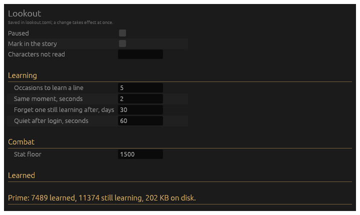
- Paused: nothing is read, learned or shown.
- Sound and banner: the Lookout trigger, on or off. Off unless you switch it on.
- Mark in the story: each new line is coloured in the story as well,
where it came, in the theme’s
lookoutcolour. Best left off while the lookout is still learning most lines. - Characters not read: names, apart by commas.
- Occasions to learn a line: 5 unless you change it.
- Same moment: the seconds in which one line heard by several of your characters is one occasion.
- Forget one still learning after: a line seen once or twice and never again is dropped after this many days, which keeps the file small.
- Quiet after login and Stat floor, as above.
The lines it leaves out are Menu › Editors › Lookout: one pattern a line, the commonest first. The built-in list brings back the one Hydra comes with.
A line you do not want, or one you always do
Right-click a line in the lookout’s window:
- Forget this line: learned now, never shown again.
- Always show this line: shown however often it comes.
Or type it, with words from the line:
.lookout forget squirrel
.lookout always town crier
.lookout alone says how much it has learned; .lookout help lists the
rest, including .lookout clear yes, which forgets everything and starts
again.
Where it is kept
What it has learned is in Hydra’s data folder, one file a game:
lookout_prime.bin. It holds a fingerprint of each learned line, not the
lines: about 200 KB after three weeks. Its choices are lookout.toml,
beside it, for every game.
Work mode
Hydra in a terminal can look like a terminal at work. Type .work on a
character’s screen and the whole screen becomes a shell running a job:
repositories cloned, a build compiling, a log scrolling by. Nothing of the
game is drawn, the terminal’s title is the shell’s, no sound plays and no
notification shows, and the tray icon goes away. Type .work again and
your screen is back as it was, with every line you missed in it.
The game plays on underneath. Your characters stay logged in, your triggers fire, Lich runs, and what you type still goes to the game: the prompt at the foot of the fake shell is your real command line in disguise. Keybinds and macros work as always.
PS C:\src> git clone https://github.com/lindqvist/shardlog.git
Cloning into 'shardlog'...
remote: Enumerating objects: 4281, done.
remote: Counting objects: 100% (612/612), done.
remote: Compressing objects: 100% (288/288), done.
Receiving objects: 100% (4281/4281), 28.70 MiB | 3.05 MiB/s, done.
Resolving deltas: 100% (2130/2130), done.
PS C:\src> cd shardlog
PS C:\src\shardlog> git log --oneline -8
3f9a1c2 Fix retry logic
8be04d7 Bump dependency pins
PS C:\src\shardlog>
The command
.workcovers the screen, or lifts the cover..work onand.work offdo one or the other, for a key bound to each..work curl,.work build,.work tailor.work sshcover the screen with that scene and keep to it. Bare.workplays one at random each time a scene ends..work helpsays all of this.
Bind a key to any of these in Menu › Editors › Keys, as you would bind any command.
The scenes
A scene is a shell’s job, line by line, at a believable pace, with its names drawn afresh each time round. Four come with Hydra:
- curl: repositories fetched and cloned, their files listed and their README read. Dense and long, and anything odd in it looks like part of the download.
- build: a Rust workspace compiled, a test failing, the file opened, the test run again.
- tail: a web server’s access log followed, with bursts and the odd error.
- ssh: a remote host’s journal followed, a service looked at, the disk checked.
Nothing is fetched from anywhere. A progress meter is a formula; the names are lists in the scene’s file; the addresses are the documentation ranges that belong to nobody. The clock in a log line is the real one, running on from when the cover went up.
The four are written to global/work/ in your data folder the first time
the cover goes up, as curl.toml and so on. Change one there and your
version is used; add a file of your own and .work <its name> plays it.
Hydra never writes over a file that is there, so delete one to get the
shipped version back.
Writing a scene
title = "curl" # the terminal's title while this plays
prompt = "PS C:\\src{dir}> " # {dir}: where the scene has gone
rest = 20 # seconds idle at the prompt before it plays again
[names] # {repo}, {user}: one picked each time round
repo = ["fast-json-rs", "kube-rollout"]
user = ["mkdev", "lindqvist"]
[[lines]]
text = "git clone https://github.com/{user}/{repo}.git"
wait = 1.5 # seconds after the line before
jitter = 1 # at most this much more or less
color = "plain" # plain, dim, green, yellow, red, cyan, magenta
[[lines]]
meter = "git" # a progress meter, redrawn in place: git or curl
lasts = 8 # seconds to reach the end
[[lines]]
text = "cd {repo}"
dir = "\\{repo}" # the prompt's {dir} from here
[[lines]]
text = "{date} {clock} {n:100-999} {hash}"
times = 40 # the line again this many times, names drawn afresh
The slots: {name} for any list under [names], kept the same all the
way round; {n:a-b} a number from a to b, fresh every use; {hash} seven
hex digits; {clock} the time of day as 14:36:10, {date} today as
28/Oct/2026, {day} as Oct 28; {dir} where the scene has gone. A
line with clear = true empties the screen first.
The one thing that gets through
A script check is the reason to be at the keyboard, and the cover would hide it. So one thing passes: any line the lookout has not learned is written into the scene as its next line of output, plain, with no mark, in the scene’s own colour. To someone looking over your shoulder it is one odd line in a wall of output. To you, who know to look, it is the warning. Answer by typing, as always; the prompt is your command line.
Keep the lookout learning before you rely on this. A lookout that has not learned your routine passes most of your story through the cover.
Covering itself
The Work mode rows of Hydra’s General settings page:
- Work mode prompt: what your command line is drawn after, over each
scene’s own.
PS C:\src{dir}>orops@web-03:~{dir}$, with{dir}where the scene has gone. A space is put after it. - Work mode scene: the scene to play and keep to. Empty, one at random each time round.
- Cover on focus lost: the screen covers itself when the terminal’s
window loses the focus, as you click away to something else. A click
back does not lift it:
.workdoes. - Cover after idle: seconds without a key before the screen covers
itself.
0never.
What it cannot hide
- Mid-word. The prompt shows what you are typing.
attackisattackuntil you press Enter. Give the telling commands an alias. - The terminal program. The taskbar, a hover, and a task manager still
show the terminal program by its own name, and
hydra-tuias a process. Over SSH from another computer, none of that is there. - Hydra’s windows. Sounds, notifications and the tray icon are held back only while no Hydra window is open on the same computer. A play window open beside the terminal plays its sounds, and shows the game.
- The clock in a log. It is the real one. A log that says
14:36at nine in the morning is a log of somewhere else.
Push to phone
A trigger can put a banner on your iPhone, even with HydraFE closed and the phone in your pocket. Tap the banner and HydraFE opens on that computer, with that character in front of you.
Setting it up
- On the computer, turn on Hydra’s web page (the hub’s Web page setting) and pair HydraFE with it, as for playing from the phone.
- Open that connection in HydraFE. The first time, iOS asks whether Hydra may send notifications: Allow.
- The page says Push: iPhone is paired. That’s all: the phone pairs again by itself each time it connects, so a phone that gets a new address from Apple is never lost.
Then give a trigger Push to phone, beside its sound, banner and notification (see What a trigger does): the line it found, or words of your own. Whenever the trigger fires, every phone paired with this computer gets the banner, titled with the character’s name. Like the trigger’s other actions, a push comes at most once every cooldown.
A phone paired with several computers gets each one’s pushes, and a tap opens the computer the push came from.
.push
| Command | What it does |
|---|---|
.push | the phones paired with this computer |
.push test | a test banner to each of them |
.push forget <name> | that phone gets no more pushes, even as it connects again |
.push allow <name> | a phone forgotten pairs again the next time it connects |
What leaves your computer
Apple only delivers a push to an app from a server holding the app’s key, so Hydra hands each push to a small relay run for HydraFE, and the relay hands it to Apple.
- Each push is sealed on your computer with a key only your phone holds, made by the phone when it first paired. The relay and Apple see “Hydra: A trigger fired.” and sealed bytes; the phone opens it and shows the real words.
- The relay keeps nothing but a fingerprint of each computer’s own token, so that strangers cannot send through it. It never writes a push down.
- What is paired is kept in
push.jsonin Hydra’s data folder.
When it doesn’t come
.pushsays no phone is paired: open the connection in HydraFE once more; it pairs as it connects. In iOS Settings › Hydra › Notifications, check notifications are allowed..push testsays the relay could not be reached: the computer has no internet, or the relay is down for a moment; the next push tries again..push testsays a phone no longer takes pushes: HydraFE was removed from that phone. It has been forgotten; install and open it again to pair.- The banner says “A trigger fired.” instead of the words: the phone could not open it, usually a phone that was restarted and not yet unlocked. Tapping it still opens the character.
- A tap opens the list instead of the character: the push came from a computer this phone has no saved connection for, or its address changed. Open that computer’s connection once and later taps find it.
Themes
A theme is how Hydra looks: its colours, the shape of its windows and
controls, its fonts, and a frame round its windows if you want one. Hydra
comes with two, Despana, dark, and Light. A theme you make is
kept in the themes folder in Hydra’s data folder, and says only what
it changes from the theme it is laid over.
This chapter goes through the editor, then making the colours, pinning a colour, shape, frame and type, and examples.
Wearing a theme
- Settings › Hydra › Hub › Theme: the theme Hydra wears: the hub, Settings, the Editors, and every play window whose character has no theme of its own. Tick Follow the computer’s dark or light mode and Hydra wears the Light theme chosen below it while the computer is in light mode.
- Settings, a character, its Theme page: that character’s window can wear a theme of its own, and an Accent of its own over it: the colour of what is chosen, a guide while arranging, a find’s hit. Edit this theme… under them opens the editor on the theme the character wears.
- From a play window:
.theme listlists them,.theme mine <name>(oroff) chooses the character’s own, and.theme accent <#rrggbb>(oroff) its accent.
The editor
Open Menu › Editors › Themes, on the hub or on any play window’s title bar: the Editors window opens at it, its draft the theme Hydra wears. Edit this theme… on a character’s Theme page in Settings opens it on that character’s theme instead.
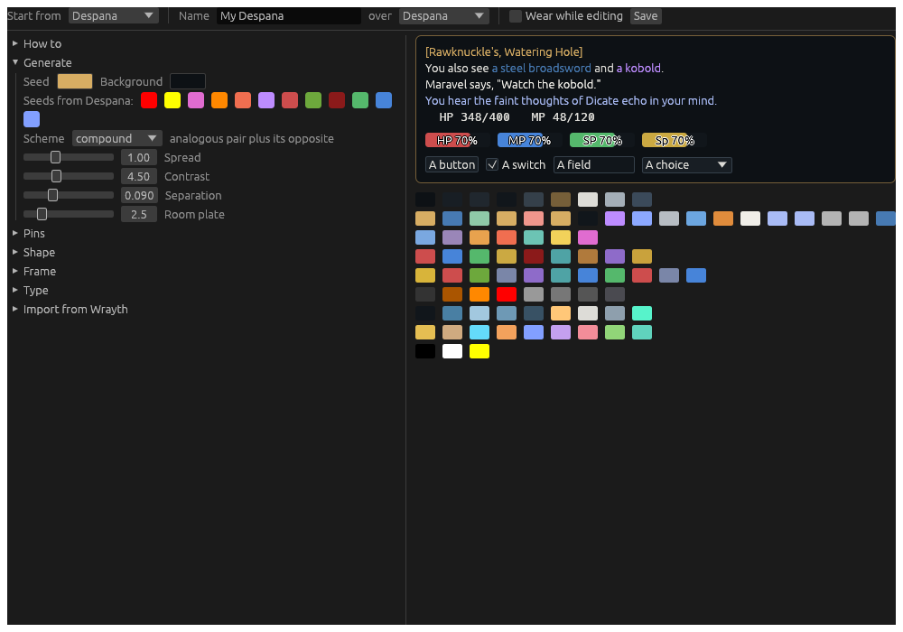
Along the top:
- Start from: the theme the draft begins as. A built-in theme starts a new one laid over it, called My Despana or My Light; one of yours opens as it is, to change.
- Name: what the theme is called.
- over: the theme it is laid over, which it takes everything it does not say from; nothing for none.
- Wear while editing: every window wears the draft as you change it, while the page is open. Leave the page and Hydra wears its own theme again.
- Save: writes the theme to the
themesfolder. A built-in theme is never written over: save under another name.
Down the left, the sections: How to, a short version of this chapter; Generate; Pins; Shape; Frame; Type; and Import from Wrayth. On the right, the draft as it comes out: a room, story text, the bars, a button, a switch, a field and a choice, and under them every colour as a swatch, a row to a group. Point at a swatch for its name and value.
The theme file
A saved theme is a short TOML file, holding only what differs from its base:
base = "Despana"
[recipe]
seed = "#c9733a"
[pins]
health = "#112233"
fatal_crit = "#d03a3a"
creature_death = "none"
[shape]
bar_thickness = 14
[shape.corners]
bars = 0
[type]
story_font = "Iosevka"
The editor writes it for you; you can write one by hand too.
Making the colours
Generate makes every colour of the theme from two you choose, so they belong together: the links, the creatures, the speech and the channels all from one seed, each readable on the ground.
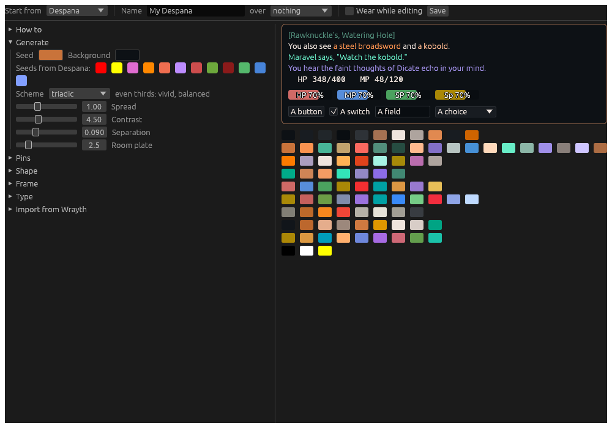
-
Seed: a colour whose hue the theme is built round. Its lightness and strength set how bright every colour is. Click the swatch to choose one.
-
Seeds from: the vivid colours of the theme you started from, offered as seeds. A click makes one the seed.
-
Background: what every colour must read against. A light one makes a light theme.
-
Scheme: how the colours spread round the colour wheel from the seed:
Scheme monochrome one hue, varied lightness and strength analogous neighbours: calm, low contrast complementary opposites: a strong pairing split softer than complementary triadic even thirds: vivid, balanced tetradic two complementary pairs golden the golden angle: the most separation compound an analogous pair, and its opposite -
Spread: how far the scheme’s colours sit from the seed’s: 0.7 close, 1.4 far.
-
Contrast: how readable every colour must be on the background: 3 is low, 4.5 the usual floor, 7 high.
-
Separation: how different two colours of one group must be, so two channels, or health and stamina, never look alike: 0.04 low, 0.09 medium, 0.15 high.
-
Room plate: the room name’s contrast on the plate under it: 2.5 subtle, 7 hard.
Some colours mean something by their hue, and keep it whatever the seed: health is red, mana blue, a warning amber, a creature’s spell coming orange. The generator moves only their lightness, to suit the background.
Over Despana the dials do nothing
Despana pins every colour as it is, and a theme laid over Despana takes its pins: the dials change nothing there. To make a theme from a seed, set over to nothing, or Start from Light, which is generated. Every colour you have not pinned is then made by the generator.
Pins
A pin keeps a colour exactly as you set it; everything else is made by the generator round it. Open Pins: every colour Hydra draws, by group.
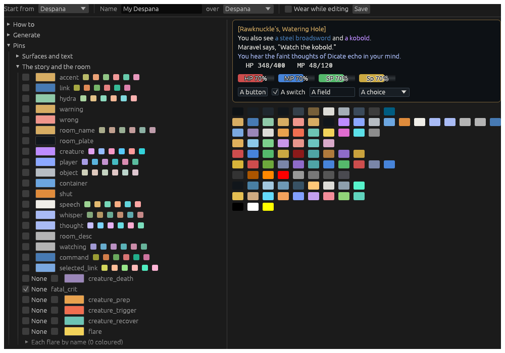
Each row is a colour’s box, its swatch and its name, and for many, a row of small swatches:
- Tick the box to pin the colour as it is now; untick it to let the generator make it again.
- Click the swatch to choose a colour: that pins it.
- The small swatches are other hues the generator could give it. A click pins one.
The groups
| Group | What it colours |
|---|---|
| Surfaces and text | the grounds, the edges, text and weak text, a selection, a tab and the shown tab |
| The story and the room | the accent, links, Hydra’s own words, warnings, the room’s name and its plate, creatures, players, objects, containers, speech, whispers, thoughts, commands, each kind of line, and a line’s time |
| Channels | a line said on Merchant, General, Help, Realm, OOC, Society or House, whole |
| Vitals | the bars |
| Status | the indicators and the lists of effects |
| Injuries | the doll |
| The map | the map’s rooms, lines, doors, you and the route |
| The map’s marks | the bank, the furrier, the gem shop and the other shops |
| Chrome | the veil and the grid drawn while arranging, part clear, and the calibrator’s mark on the doll |
Colours of one group are kept apart from each other, by Separation; colours of different groups may be alike, since they are never side by side.
None
A kind of line can be None: drawn as the story’s own text, with no colour of its own. The kinds are a creature’s death, a fatal crit, a creature preparing a spell, about to land a special, or recovering, a flare, a status landing on you, and each channel. Tick None beside it.
A fatal crit starts at None in every theme. A creature that cannot be crit to death dies by its death message, which is coloured as a death; the crit that killed one that can is a line of its own. Untick its None to give fatal crits a colour: it starts at the theme’s red, to change.
Each flare, each status, by name
Under flare and status_you, Each flare by name and Each status on you by name list every name the combat reader knows. Filter narrows the list. Tick a name to give it a colour of its own over its kind’s, or None to draw it plain; the count in the heading says how many have one. An acid flare can be green and a fire flare red, while the rest stay the flare colour.
Shape, frame and type
Shape
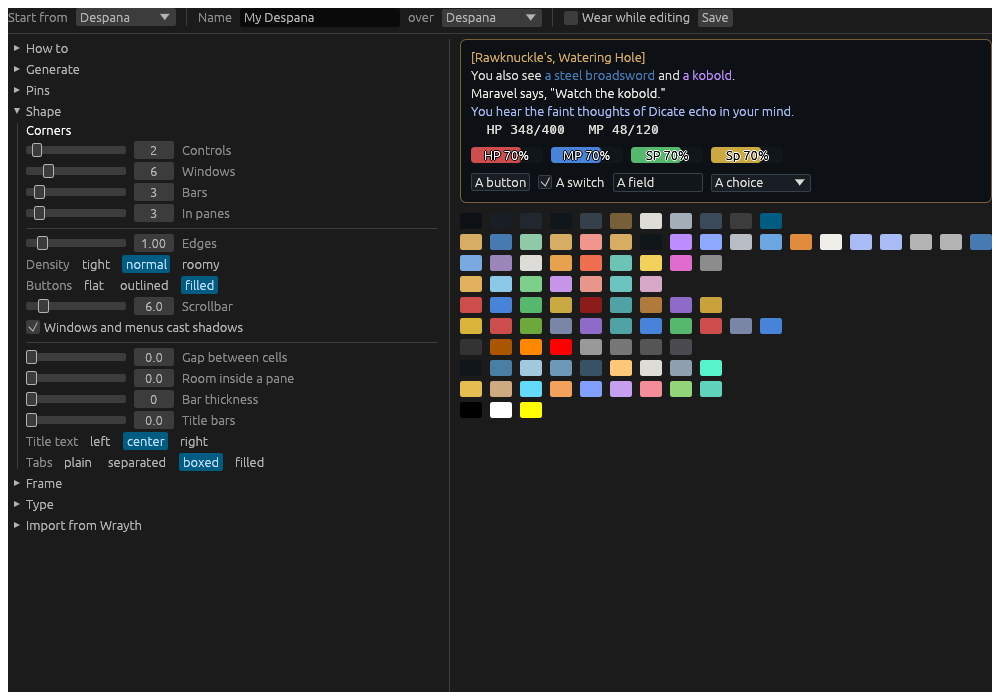
- Corners, each from 0, square, to 32:
- Controls: buttons, fields, checkboxes, dropdowns and tabs.
- Windows: windows, menus and popups.
- Bars: the vitals and every other bar.
- In panes: indicators, the compass’s cells, a find’s hits, and the outline of the window in use.
- Edges: an edge’s width on controls and windows.
- Density: how close controls sit and how much room is inside them: tight, normal or roomy.
- Buttons: how a button looks at rest: flat, its words alone until you point at it; outlined; or filled. Every style fills under the pointer.
- Scrollbar: its width.
- Windows and menus cast shadows.
- Gap between cells: between the cells of a custom window.
- Room inside a pane: round each widget, inside its pane.
- Bar thickness: the most a bar is thick, centred in its pane; 0 fills the pane.
- Title bars: a window’s title bar’s height, and a cell’s tabs’; 0 is the usual.
- Title text: where a window’s title sits: left, center or right.
- Tabs: how a cell’s tabs are drawn: plain, their words alone;
separated, a line between each two; boxed, an edge round each, the
shown one filled; or filled, each on the tab ground. A theme’s tabs
are boxed unless it says otherwise. A cell can choose its own, under
Tab look on any of its tabs’ pages in Settings. The grounds are the
tabandtab_shownpins.
Frame
Frame draws a picture frame round every window and card: a frame kit from an installed pack, named by its pack and style. Frame kits come from Packs in the Editors window, under Frame kits. The base’s keeps the frame of the theme it is laid over; none draws none.
Thickness is how far in from a window’s edge its title and content keep; the whole frame is drawn at that scale. The frame is each window’s border, in place of its own edge, flush with it. Some kits’ decoration reaches further in, over the content – honey drips, thorns – but only in a window’s top half: below its middle nothing is drawn deeper than the thickness.
Type
- UI font and UI size: everything but the game’s words.
- Story font and Story size: the story, its streams and the room.
- Story line spacing: room added between two lines of the story and its streams.
- Fixed-width font and Fixed-width size: the tables the game lines up, Hydra’s tables, and the log window.
- Fallbacks: fonts tried in turn for a character a font lacks, a symbol or an accented letter. Add a fallback adds one; Take out removes it.
- Give a kind its own…: a kind of widget with a font or size of its own, Thoughts smaller or the Room in another font. One widget can have its own too, on its page in Settings.
A font is one in the fonts folder of Hydra’s data folder, a .ttf or
.otf put there, or any font installed on the computer: open the list
and type part of its name. A font takes a moment to load the first time;
the window redraws once it has.
Examples
Each starts from Editors › Themes. Tick Wear while editing to see every window change as you go, and Save when it is right; then choose it on Settings › Hydra › Hub › Theme, or on one character’s Theme page.
A theme from one colour
Start from Despana, and set over to nothing, so every colour is generated. Click one of the Seeds from Despana, or the Seed swatch to choose your own colour, and try the Schemes: triadic for three hues round the wheel, analogous for a calm one. Name it and save.
A light theme
Start from Light: a warm white ground and its blue seed, every colour generated to read on it. Change the Seed for another accent, or the Background for another ground. To wear it only by day, tick Follow the computer’s dark or light mode on Settings › Hydra › Hub and choose it as the Light theme.
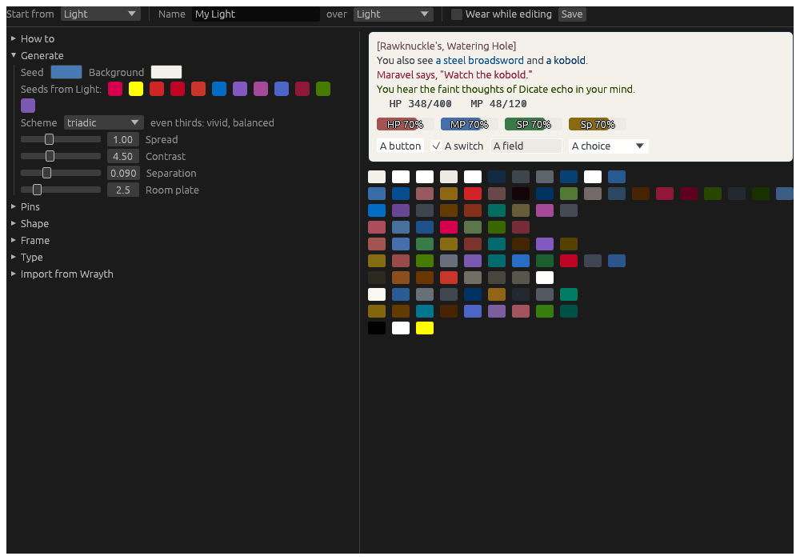
Each channel its own colour
Open Pins › Channels. Each channel colours its lines whole, the
[Merchant] tag and all; click a channel’s swatch and choose. Tick
None for a channel you would rather read as plain text.
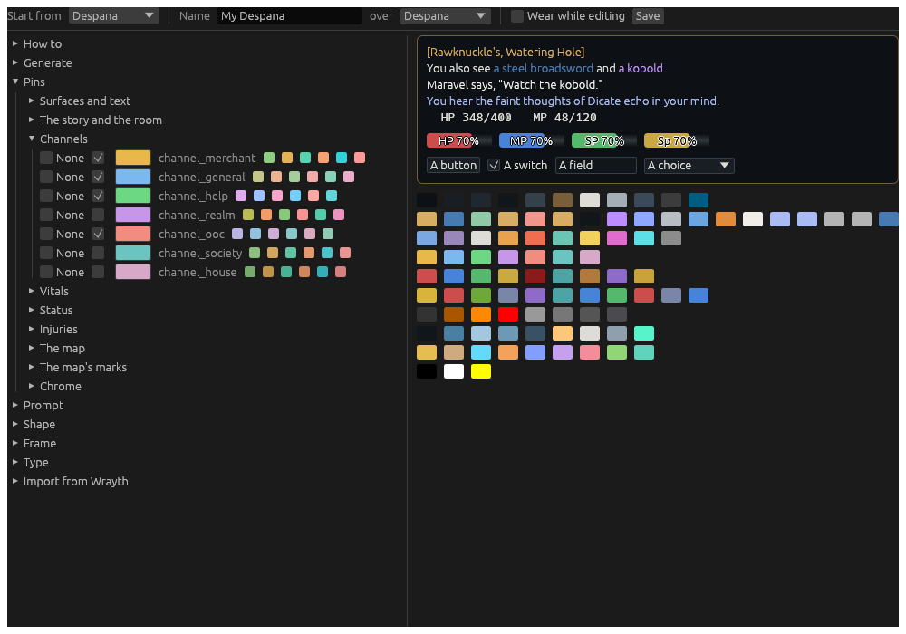
Make fatal crits stand out
Open Pins › The story and the room. fatal_crit is at None:
untick it, and choose its colour. A creature’s death message keeps the
creature_death colour, so a kill by a crit and a kill by damage read
apart.
A square, tight look
Open Shape. Set every Corner to 0, Density to tight, Buttons to outlined, and Tabs to filled, so every tab sits on a ground of its own.
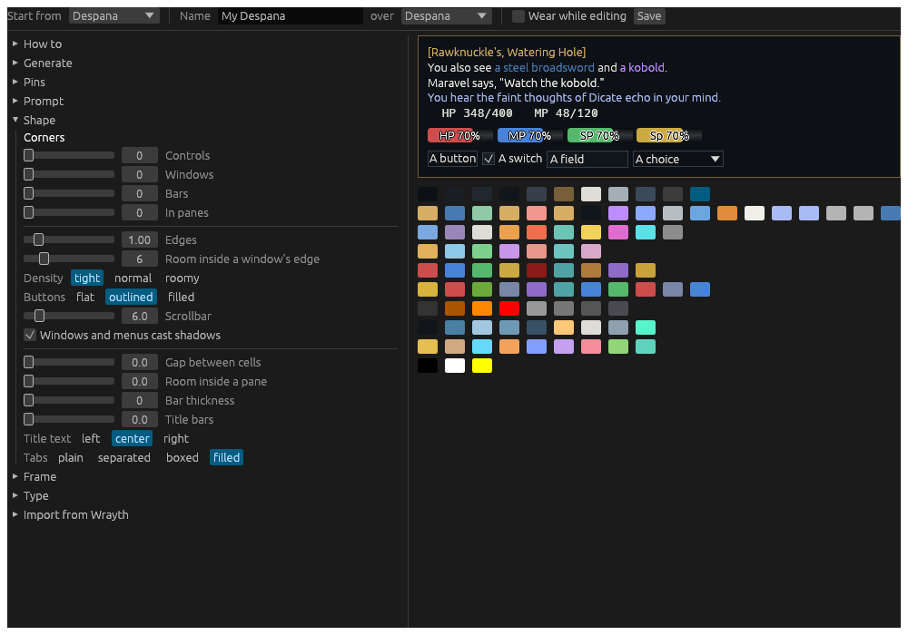
Bring a Wrayth skin over
Open Import from Wrayth. Paste the path of a Wrayth skin (.skn) or
settings file (.xml), give it a Name if you like, and press
Import. Its preset colours, the room names, creatures, speech,
whispers, thoughts, watching and links, become a theme over Despana. A
skin’s pictures and fonts are not brought, only its colours.
From a play window, the same: .theme import <file>, or .theme import <file> as <name>.
One character in its own colours
On Settings, choose the character, and its Theme page: choose a
Theme for its window alone, and an Accent over it. Two characters
side by side are told apart at a glance. From its play window: .theme mine <name> and .theme accent <#rrggbb>.
Keybinds, macros and hotbars
One thing with three faces. A macro is a chain of commands with the logic: it waits for the roundtime, it puts you in a stance only when you are not in it, it keeps a reserve back. A keybind is a key for your hands. A hotbar is buttons for your eyes. Both run macros, and a macro also answers to a word of its own on the command line. Nothing is written twice: the macro holds the chain, and the key, the button and the word all point at it.
Macros are made on the Macros page of the Editors window, in an editor with every field explained on hover. This chapter goes through the chain language, macros and what they keep, keybinds and hotbars, the faces, and countdowns, what a button counts on its face.
Aliases
An alias is the plainest of the words: a trigger typed in place of one
or more commands, with no logic. ls for look; s for get \1 from my \2, sell \1, stow all, typed as s sword back. Its target is the
chain language below, less the behaviour words: commands, waits, rt and
ct, with \? for everything typed after the trigger and \1, \2…
for its first, second… word. An alias runs typed with Hydra’s symbol
too, .s sword back, when the word is not one of Hydra’s commands.
Aliases are kept for everyone and for each character over that, in
aliases.json. The Aliases page of the Editors window lists both,
with a search; an alias opens as its steps on lines, with a Try with
box that shows what a line would send without sending it, Save, a
switch between the character’s own and everyone’s, and Take away.
.alias edit <trigger> opens the page at a trigger, and .alias on the
command line adds, removes and lists without the window.
The chain language
A chain is pieces with a comma between them. Each piece is one of:
| Piece | What it does |
|---|---|
weapon barrage | A command, sent to the game as if you typed it. |
s1.5 | A wait of so many seconds. |
rt | Wait until your roundtime is over. |
ct | Wait until your cast roundtime is over. |
stance offensive | A behaviour word: Hydra does it with intelligence. |
stance off, rt, barrage
reads as stance offensive, then wait for roundtime, then barrage. Hydra sends nothing for the stance when you already stand in it, and waits out any roundtime before the stance and before the attack.
A comma inside quotes or brackets is kept, so a Lich command keeps its
Ruby: ;e cast(901, "a rat"), look is two pieces. A comma in speech is
cut, so write it 'Hello\, friend. A line break or \r cuts as a comma
does, as the files Wrayth wrote them did.
Hydra waits on its own clock, which the game keeps: rt ends when the
roundtime the game stated does, not after a guess. A wait is at most a
minute. .stop stops a chain wherever it is.
The behaviour words
A behaviour word is a command Hydra carries out by reading the game first and the game’s answer after, in a chain: a macro, an alias, a key. A line typed and sent goes to the game as it is. The first behaviour word is stance.
stance <x> takes any of the six stances, or the first letters of one:
stance off, stance def, stance gua.
- Already in the stance asked for: nothing is sent.
- In roundtime: it is waited for, since the game takes no command then.
- Otherwise it is sent at once. Asked for defensive in a cast roundtime, the game sets guarded and says why, and that is taken as the answer.
- Sent, the stance bar is the truth. The step is done when the bar shows the stance. If the game does not show it within a few seconds, the chain stops and the story says why.
Assaults
barrage, flurry, fury, gthrusts, pummel and thrash, with a
target or without, are behaviour words too: Hydra sends weapon barrage
and the rest. An assault strikes a few times a round over several
seconds, so the chain waits for the assault to end, not for it to begin.
- Not one of your techniques, not enough stamina, cooling down, or overexerted: nothing is sent, the chain stops and the story says why. What Hydra does not know yet stops nothing.
- Roundtime and cast roundtime are waited out, then the assault sent.
- The chain goes on when the game says the assault is over: its own last
line, or a line that ends any assault (
You complete your assault,Distracted, you hesitate, the target already dead). The roundtime after each round of strikes ends nothing. - A refusal, such as
Barrage is still in cooldown.orYou are still stunned., stops the chain with the game’s words. - With no end in 20 seconds, the chain stops and says so.
Only the chain waits. Anything else you type, click or run goes to the game as ever, and the game decides whether it ends the assault.
Written with weapon, as weapon barrage, an assault goes to the game
as written: nothing is checked and the chain does not wait.
A ...wait
When the game answers a behaviour word with ...wait 1 seconds., Hydra
waits it out and sends the word again, at most three times.
Macros
A macro has a name, its commands, and what it keeps: a key that runs it, a word that runs it from the command line, and the condition it runs under.
The editor
Open the Editors window at Macros: Menu › Editors › Macros. Every macro is listed on the left, everyone’s and this character’s own; the one chosen is in the form on the right. Every field says what it is for when you rest the pointer on it.

| Field | What it is |
|---|---|
| Name | One word. A key, a button, .macro and the alias run it by this. |
| Kept for | Every character, in macros.toml in the data folder; or this character alone, beside its layout. A character’s own macro replaces everyone’s of the same name. |
| Key | A key that runs it, written as the Keybinds page writes one: F5, Ctrl+Numpad8. Capture takes the next key you press. A keybind on the same key wins over it. |
| Set | The macro set the key is in, 0 to 9, or every set. |
| Alias | A word that runs it from the command line, and from a Lich script. It is kept as one of the character’s aliases; a word already an alias for something else is said when you save, and left as it was. |
| Commands | What it does, a piece per line or with commas between, in the chain language. The syntax is under the box; rest the pointer on it for the whole of it. Under that the commands are read back as a sentence, or refused with why, as you type. |
| Runs only when | The condition. With none, the macro always runs. |
| On a hotbar | How its button looks on every bar it is on: its Label (its name unless given), its Face (the label, an icon, or both), the Icon, and folded under it, its look while no state holds: what it reads, its colours, dimmed. |
| Advanced | Folded: a tooltip for its button, what its button counts down, how often it may run, and the states. |
Save macro keeps it where Kept for says. Try runs the commands on the character now, as the form has them, before you save. Remove macro takes it out of its file.
To take several away at once, pick them in the list: Ctrl and a click adds a macro to the picked, Shift and a click picks every one from the last clicked to it. Remove at the top of the list takes the picked ones away, asked first, and the Delete key does the same while no field is being typed in. Every editor’s list works this way: aliases, hotbars, highlights and stream rules too.
The condition
A macro runs only when its condition holds. Not holding, the macro is unavailable: its button greys, and a press, its key or its word sends nothing and the story says why. The condition is built as a trigger’s When is: tests, any one or every one of which must hold, each marked red or green as it holds on the character right now.
The tests are the triggers’ tests, and the ones a hunting script checks before a command. Against a bigshot command check:
| Test | What it reads | In bigshot |
|---|---|---|
| vital | health, mana, stamina or spirit, by percent or points | h50, m20, s30, v10 |
| encumbrance | the encumbrance percent | e50 |
| resource | shadow essence, the society’s resource this week or in all, covert arts charges | essence3 |
| effect up, effect not up, effect time left | a spell, buff, debuff or cooldown by name | ES"...", EB"...", EC"...", ED"...", barrage, flurry, rapid |
| indicator | hidden, poisoned, diseased, kneeling, prone, stunned and the rest | hidden, poison, disease, k |
| roundtime, casttime | under way | |
| target status | the target is stunned, prone, webbed, flying, calm, immobilized and the rest | stunned, prone, webbed, flying, frozen |
| target flag | the target is hostile, disengaged, dead, sympathetic, ascended, inferior, a boss, challenging, a rider, a mount | ascended, mini_boss, challenging |
| target kind | the target is undead, living or noncorporeal, by the bestiary | undead, noncorporeal |
| target health | the target’s health, by percent | thp20, wounded |
| creatures | how many creatures are in the room, or how many can be attacked | mob2, valid1 |
| hand empty, hand holds, spell prepared, spell affordable, stance, room, time of day, flag | the rest |
The target is the first creature in the room the character may attack. With no creature, every target test reads false.
A reserve is one test: stamina >= 60 points keeps sixty stamina
back for something else. Put it in Runs only when and the macro greys
under it. The manoeuvre’s own cost is the floor underneath: an assault
word never sends with less than it costs, whatever the condition.
How often it runs
Under Advanced, Again after holds the macro for so many seconds
after it ran: pressed sooner, it runs nothing and the story says so.
Once per room runs it once in a room: pressed again there, it runs
nothing until the character has moved. These are bigshot’s repeatdelay
and once.
States
Also under Advanced, for the few who want them: more logic, the first state whose condition holds deciding. A state can make the macro unavailable, run other commands instead of its own, count down something else, and give its button a look of its own: other words, other colours, dimmed, another icon. Each state is said as a sentence, starred while it decides, and warned when a state above it holds whenever it does, so it never decides. + State offers the states the macro’s commands suggest, a spell’s mana or roundtime, and one of your own. The condition above is enough for most macros.
In the file
[[macros]]
name = "barrage"
commands = """
stance off
rt
barrage
"""
key = "F5"
set = 1
alias = "wb"
when = { type = "vital", vital = "stamina", cmp = ">=", value = 60, unit = "absolute" }
repeat_after = 3.0
[[macros.states]]
when = { type = "indicator", id = "stunned" }
chain = "stance def"
From the command line
| Line | What it does |
|---|---|
.macro barrage | Runs it, when its condition holds. |
.macro | Every macro, with its commands, key and word. |
.macro show barrage | One macro, whole: its condition and states too. |
.macro alias barrage wb | Makes wb an alias that runs it. A word already taken is said, with how to overwrite it. |
A Lich script can run a macro the same way, since a .macro line typed
by a script is a line typed.
Examples
The stance dance. Two macros on two keys. F5: stance off, rt, barrage. F6: stance def. Press F6 straight after F5 and
Hydra waits the attack’s roundtime out before it asks for defensive.
A cast chain. stance off, prep 901, cast, rt, stance def: the prep
and the cast go at once, the cast’s roundtime is waited for, then the
stance comes back.
A finisher. barrage that runs only when the target’s health
is at or under 20%: the button greys until the creature is nearly down.
A reserve. barrage that runs only when stamina is at least 60 keeps
enough for a second manoeuvre you may need more.
Keybinds and hotbars
The faces of a macro: a key for the hands, a button for the eyes.
Keybinds
Open the Editors window and choose Keybinds; a play window’s Keys menu opens it too, working for that character. For at the top picks every character’s keys or one character’s own. Every key in effect is listed, with what it does and where that came from. A key is bound to one of:
| Binding | What it does |
|---|---|
"commands" | Commands sent to the game, a chain: its waits and behaviour words carried out. |
{ fill = "text" } | Text put in the command line for you to finish. |
{ action = "name" } | One of Hydra’s own actions: switch set, open a drawer, lock. |
{ macro = "name" } | Run the macro of that name. |
Keys come in sets, 0 to 9, and a key switches which set is in use. A
macro’s own key, set on the Macros page, is listed among the keybinds as
macro: <name> in the set it names, or in every set when it names none,
so a key two things claim is seen. A keybind in the keys file wins over a
macro’s key on the same chord.
A send keybind’s text is a chain, as a macro’s commands are: its waits,
rt, ct and behaviour words are carried out. For a condition, a
countdown or a button, make a macro and bind the key to it.
Hotbars
A hotbar is a grid of slots, and each slot holds a macro. The macro is the button: its label, its icon, its colours, what it counts down, the looks its states give it, and what a press sends are all set on the Macros page. The bar is only the layout: its grid, the size of its buttons, and which macro sits in which slot. A macro looks and works the same on every bar it is on. A press runs the macro when its condition holds. While it does not, the button is drawn dim, and a press sends nothing.
Open the Editors window and choose Hotbars: Menu › Editors › Hotbars. Every bar is listed on the left, the character’s own and everyone’s; the bar chosen is drawn on the right as its widget draws it, and under that its slots. Click a slot and pick the macro it holds, or empty; drag a slot onto another to move it there. Macros page opens the macros, to make one or change how it looks. Pictures for buttons are kept on the Icons page of the same window.
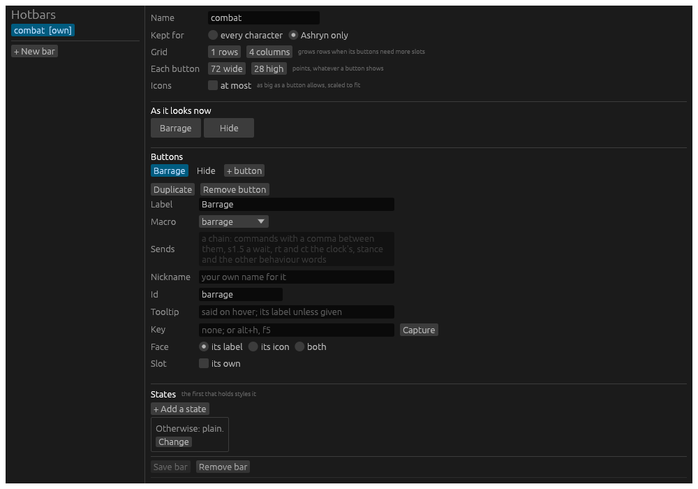
A bar need not be on the screen for its keys to work: a macro’s key is the macro’s. The Hotbar widget on a play window shows the bars you choose to see.
Bars made before, by an earlier Hydra or brought from Vellum, had
buttons with commands and looks of their own. The first time Hydra
starts, each such button becomes a macro, named after its label, in the
macros file beside the bar’s file, and its slot holds that macro. A
button that already ran a macro gives the macro its label, icon, colours
and states, where the macro had none. Both files as they were are kept
beside them, ending .before-macros.
The controller
A controller’s binds are keybinds too, and may press a button or run a macro. The Controller page of the Editors window holds them.
From the command line
| Line | What it does |
|---|---|
.hotbar combat attack | Presses the bar combat’s button that holds the macro attack, as a click would. |
.macro barrage | Runs the macro. |
.hotbars | Opens the hotbar editor. |
.alias | The aliases, where a macro’s word is kept. |
Countdowns
A button counts something down on its face: the seconds left of a roundtime, a cast roundtime, an effect, or a spell laid on the room. The countdown is the macro’s, set under Advanced › Counts down on the Macros page, so every button that runs the macro shows the same seconds, in the window, on the web page and in the terminal alike.
What can be counted
| Source | What it counts |
|---|---|
| Roundtime | Your roundtime. |
| Cast roundtime | Your cast roundtime. |
| An effect | The time left of a spell, buff, debuff or cooldown, by its name – as written, or as the start or part of it. |
| A spell on the room | The time left of a spell you laid on this room: Breeze, and the others the room-spell table knows. |
Timers in order
A macro may count several things, in order: the first that is running is shown. A buff’s time while it is up, then its cooldown’s once it has gone, is the usual pair. Each timer has a colour of its own, so the seconds say which they are at a glance – green while the buff holds, red while it cools; with none, the theme’s. + then on the Macros page adds the next timer.
[[macros]]
name = "barrage"
commands = "barrage"
countdown = [
{ source = "effect", category = "Buffs", name = "Enh. Dexterity", colour = "#4caf50" },
{ source = "effect", category = "Cooldowns", name = "Barrage", colour = "#c0392b" },
]
One timer is written as a table, countdown = { source = "roundtime" };
more than one as a list.
A state’s own countdown
A state may count down something else while it holds – Counts down instead under the state – so a button can show a spell’s time while it is up and the roundtime once it is not.
Spells laid on a room
Some spells stay in the room they were cast in and cannot be cast there
again until they end. Hydra knows these by a table, data/room_spells.tsv:
for each, the line that lays it, the line said while it lasts, the line
that ends it, the refusal when you cast it where one already lies, and
how long it lasts by its caster’s level. Breeze is the first row: a level
100’s blows for 297 seconds, in nine-second beats, and ends on the last
beat inside its time.
The time left is known for a spell you laid yourself; one laid by someone else, or only heard by its beats, lasts until its stop line, or at most what a level 100’s would. The countdown uses it, and so does the trigger and macro condition room spell, so a button greys while Breeze already blows here, and a trigger can say when it is about to stop.
A spell not yet in the table is added from the lines seen in play.
A game controller
A controller plugged in works on the character whose play window has the keyboard. Its buttons do what a key does: send commands, fill the command input, or do one of Hydra’s own actions. One stick walks, the other scrolls, and a wheel of commands opens under a held button. The pad is read while it is connected, and the story says when one is connected or gone.
What a button does
Binds are written in controller.toml: one in the data folder for every
character, and <game>_<name>.controller.toml beside a character’s layout
for that one, whose binds are taken over everyone’s button by button. With
no file at all Hydra’s own binds are used, and a file written for Vellum
works as it is.
[controller]
start = "interact_mode" # Interact mode, begun or left
dpad_up = { macro_text = "up\r" }
south = { macro_text = "look\r" }
l2 = "controller_modifier" # Held: chords another button
r2 = "controller_wheel" # Held: the command wheel
r3 = "controller_wheel:portals" # Held: the room's ways out
select = "controller_overlay" # The legend, shown or put away
"l2+south" = { macro_text = "stand\r" } # a chord
The buttons are south, east, north, west, the four dpad_
directions, l1, r1, l2, r2, l3, r3, select, start and
guide. A value is an action’s name, or { macro_text = "..." } for
commands sent as typed. A macro naming <target_id> or <target_noun>
acts on the thing interact mode has in focus, and is not sent with none.
A chord is a button pressed while modifiers are held. A button bound
to controller_modifier does nothing on its own; held, it makes another
button’s chord, l2+south. Only the bind with exactly the modifiers held
is done, so holding l2 and pressing South never does South’s own bind.
The sticks
One stick walks, a step each time it is pushed a new way, in eight directions. The other scrolls the window in use, faster the further it is pushed. Which is which is set under Tuning. A push has to be firm and the return fair, so a stick wobbling at the edge of a direction does not step twice.
While a menu is open, the d-pad moves in it, South chooses and East closes, and no stick walks.
Interact mode
The interact_mode button begins it. The d-pad steps a focus through the
things in the room and on you – up and down within a kind, left and right
from kind to kind – and the scrolling stick does the same. South acts on
the thing in focus, East leaves. The mode’s line shows at the window’s
foot, and the thing in focus is marked wherever it is drawn.
The wheel
A button bound to controller_wheel holds a ring of commands open. Aim
at a slice with the stick that does not walk, hold it there, and let go to
fire. A slice with slices of its own is a folder: hold on it to open it,
and on Back to come out. An analog trigger opens the wheel once pulled far
enough and lets it go only when well released, so one resting near the
point does not flicker it.
[[controller_wheel]]
label = "stance"
[[controller_wheel.slices]]
label = "offensive"
command = "stance offensive"
color = "#b03030"
A wheel of your own is controller_wheel:<name>. The portals wheel,
controller_wheel:portals, is made from the room as it opens: every way
out that is not a compass direction, and its doors and gates by their
nouns; a crossing Hydra walks itself is fired as its go2.
Rumble and the legend
The pad rumbles when roundtime ends, when you are stunned, when you die,
and for a highlight that asks for it. controller_overlay shows the
legend down the play window’s right edge: the binds the file lists, a
chord’s drawn strong while its modifiers are held.
The Controller page
Menu › Settings › Controller is tabs. Bindings lists every
bind in effect, whose it is, what it does, and whether the legend lists
it; a bind is added or changed in a form, its button picked from a list or
captured by pressing it, up to two modifiers held with it, and what it
does. Rumble picks the pattern for each moment, each tried on the pad
with Test. Tuning is every field of [controller_tuning], written as
it is let go. Wheels picks a wheel, the button that opens it, the stick
that aims it and the angle of its first slice, and lays its slices out as
a tree beside a drawing of the ring, where a slice is dragged, split with
a right click or joined with its neighbour.
On Hydra’s own settings the page changes every character’s file; on a character’s, that character’s own.
On Windows a pad’s buttons reach a program only while one of its windows has the focus, so click the play window once after plugging in.
The web page on a phone has a wheel of its own, drawn for a thumb; it is kept with the phone’s buttons and copied to this computer and back on the page’s own terms.
Reports
Hydra keeps a ledger of what each character does: every experience pulse
as the mind-state bar states it, and every hunt the combat reader saw, with
its attacks, flares, hits and statuses. The ledger is one file for every
character, hydra.db in the data folder, and nothing is ever sent to the
game to fill it.
The reports read that ledger. There are two ways to them.
The Reports window
Menu → Reports opens the window, from the hub or from a play window’s title bar. From a play window it opens at that character; the picker at the top left chooses any character the ledger holds.
Down the left is the list, by family: Experience, Combat, and
Flares, which opens to every flare recorded for the character, by
name. The box above it finds a report by its name or by what it shows:
type barrier and Intercepts is left, pulses and Mind. Enter runs the
first that fits. A click on a report runs it.
The strip along the top sets what a report runs over:
- Latest hunt, Every hunt, Last n hunts or One hunt by id, for the combat reports that take a scope.
- Between, with a from and a to: two hunt ids for the combat
reports, or two times for the experience report over a span. A time is
13:05for today,07-20 13:05for this year, or2026-07-20 13:05:52. - Name, for the reports that take one: a creature’s noun.
Attacks and Creatures list every one over the scope, by damage, a page at a time. The row above them turns Recent on, newest first, with a number for only the last so many; sets the rows a page; and walks the pages.
The pane shows the report with its links live. A link runs that report in
the pane: Intercepts links each barrier to its flare report, a hunt’s
report links its creatures and attacks. Back and Forward walk what
has been run, Refresh runs the report shown again, and Export
writes it to a file under the data folder’s reports.
A hunt closing runs the report shown again on its own, so a hunt’s numbers are current without a click.
Experience
Every absorption pulse is a row: what the bar said was gained, in experience and in ascension, the field pool against its cap, the mind’s state and the bonuses on. The reports read those rows; the ones across time draw a bar a row, so a day or a week is seen at a glance. Each counts in whichever gain moved more over its span, which is ascension once a character is capped, and says which in its title. The time absorbing is the pulses’ own: a break longer than a pulse and a half counts as one pulse, so an hour away does not drag a rate down.
- Hours is the last 24, a bar an hour, newest last, with the mind
state the hour mostly sat in and how long of it went idle.
exp hours 12is the last twelve. - Week is seven days, a bar each, with each day’s rate and time absorbing, against the seven days before, and the best and worst day.
- Clock is the average for each hour of the day over fourteen days:
when the gains come.
exp clock 30averages over thirty. - Mind is where the time went: each state’s share of it and what a
pulse absorbed there, how long the pool sat at its cap (a kill past the
cap absorbs nothing) or empty, and how far apart the pulses came.
exp mind week, or two times, widens it. - Hunts is one row a hunt, newest first: its length, its kills, what
was absorbed while it ran and the rate, the creature seen most, and its
id linked to its combat report.
exp hunts 20,exp hunts week. - Bonus is each bonus on against off, a pulse’s worth either way, and where the span’s gains came from: absorbed, bounties, the brooch.
- Everyone is every character today on one table, with each one’s mind state and last pulse.
- Level is the level reached and when the next comes at today’s pace, this week’s, and the best day’s; at the cap, the pace in what still moves.
Session, Today, Daily, Last pulses, Instant and Between times add a span up, as before.
Flares
A flare’s report says how often it fired over every attack it rode, by attack, by the weapon in hand and, for a bow, by volley round; then what it did when it fired. The weapon table folds an item’s ids into one row, with by item opening every id; effects opens its rate with each effect up and without it, the ten widest gaps among effects up and down for a hundred swings each; fires alongside lists the flares that fire with it.
The Effects report lists what was up over the hunts, each effect under its name: the dialog writes a value or the time left into the text (“Empowered (+29)”, “Hypothermia (4) 9 mins”), and those are one row, with a link to the effect’s values, each as it was written, how many times it went up and for how long.
Gemstones
A hunt is recorded with the gemstones equipped as it opened, since a set
cannot change in combat. A hunt’s report lists them with their ranks, and
a gemstone flare’s report (mirror image, hunter’s afterimage, the shroud)
says the property it belongs to and its rate at each rank it ran at. The
set comes from gem list all, read when it passes and kept in the
character’s file; equipping or unequipping a gemstone keeps it current.
Barriers
Wall of Thorns blocks an attack before any roll, so a block says nothing of whether it would have hit; Barkskin absorbs the next hit, so every absorb would have. The reports keep the two apart: Intercepts counts the attacks blocked before any roll, then of those past the barriers, the ones that would have hit, absorbed or landed. The hunt keeps when each barrier was up (see Effects), so the thorns’ report gives blocks over the attacks that came while the wall was up, beside the one in five the spell says, and the lash that poisons over the blocks, beside its one in four; the bark’s, absorbs over what would have hit while it was up.
Gear
Every swing of yours is recorded with what the hands held as it was made, by the item’s own id, so two bows of one noun are two bows to the reports. A volley’s arrows carry their round. A flare the gauntlets lent, told by “You feel drained.” before it, is the gauntlets’ and not the bow’s. The items worn are kept per hunt as spans: from the second an item was first seen worn to the second it was seen gone, so a swap during a hunt is a closed span and an open one. An item is one name across logins, where the game’s own id for it changes with each. A flare’s report then shows its rate by the weapon in hand, by round, and by source; a flare that fires on a first flight only leaves a volley’s later rounds out of its base. Gear lists each item held with the flares seen on it, the gauntlets’ flares, and the items worn over the hunts.
Effects
Every spell, buff, debuff and cooldown the game lists is kept over a hunt the same way, as a span from the second it was seen up to the second it was seen down; Barkskin, which shows no bar while up, is read off its lines. Nothing is copied per attack: an attack’s active set is whatever spans cover its time. Effects lists what was up over a scope, in how many hunts and for how long against the hunting time. A hunt’s report says what was up as it opened. A flare’s report ends with the effects that were up for some of its swings and not the rest, with the rate each side, which is where a buff or a gemstone property shows whether it changes anything. Names are kept once, in one table, so the file does not repeat them: a flare, a spell, a property, a piece of gear is a number in the rows and a name in the table.
Syncing
The first time a character is seated with nothing stored, Hydra sends the
reports that teach its facts once: info full, skills full, the PSM
lists, inventory enhancive totals, gem list all, society and the
rest. They are asked quietly, one at a time: their long answers stay out
of the story, which says only each stage (Sync 2/12: skills full) and
when all are done. After that, play keeps them current and nothing is
sent at login.
.sync sends them all again, .sync <group> one of them, and .sync reset drops what is stored first.
Typed
The same reports answer on the command line, in a character’s play window:
.exp for the experience reports and .cstats for combat. .exp help and
.cstats help list every one. Three words change the ledger and are only
ever typed: .exp addgain <n> for a gain the bar did not state, .exp clean to drop pulses with no gain, and .exp reset to drop every row of
that character’s, which asks first.
Filling the ledger from recordings
A session Hydra recorded (its .bytes files, when recording is on) can be
read back into the ledger with Hydra closed:
hydra import logs
Each session is replayed as it was played, and every hunt and pulse it holds is recorded. A file is never read twice, a session that overlaps hunts or pulses already on file is refused, and a pulse already on file is skipped.
Lich’s own logs read back the same way: point hydra import at a Lich
logs folder, or any folder under a GSIV-<Name> one, and its .xml
files are read (the plain .log files beside them hold nothing a report
can use). The folder names the character and its game; the files Lich
cut a login into are read as one session, so a hunt across a cut stays
whole. A log older than the game’s experience numbers on the mind bar
brings its hunts but no experience.
hydra import "E:\Gemstone\data\log archive\GSIV-Nisugi\2026\01\xml"
Login rewards and store Simucoins
The game gives a free reward the first time a character logs in each day, and the store gives each account free Simucoins once a month. Hydra keeps track of both, and can collect them for you.
The daily login reward
The game’s day turns at midnight Eastern. On a character’s first login of that day the game says two lines: it thanks you for logging in, with the streak of consecutive days, and it names the reward. Hydra reads them whenever a character logs in through it and keeps one row a character a day in the ledger: the reward, the streak, any login bridge the game spent, and both lines whole. Nothing is ever sent to the game to learn this.
Ask for it on the command line:
.rewardssays whether today’s reward is in for this character, at what time, and lists the last ten..rewards allshows every character’s latest reward and whether today’s is in..rewards storeshows each account’s store Simucoins (below).
The same three are in Menu → Reports, under Login rewards.
hydra import also reads rewards out of old recordings, so the history
fills in from the days you played before.
A day marked given before Hydra saw it is one where the character had already logged in somewhere else, so the reward came earlier and Hydra did not hear it.
Claiming it for you
Turn on Claim the login reward in Settings → Rewards, and pick the time. Hydra then logs in for the reward alone, for every character on the roster whose account has a kept password, and no more than that: it connects, hears the reward and disconnects. Nothing is played.
It is careful about when:
- Only once the time you set has passed today, by your own clock.
- Only if Hydra was running when that time came. A Hydra started later waits until nothing has been connected through it for ten minutes, so starting Hydra to play is never met by a login of its own.
- Never on an account that has a character connected through Hydra. That account is left alone and tried again every few minutes until the reward is in or the game’s day turns.
- Only for a character whose reward for today is not already in.
Hydra cannot see a character played in another program, such as Wrayth. A scheduled login on the same account can log that character out. Choose a time you are not playing, or list the character under Never log in for.
Each login ends with quit, as you would leave, so the character is not left
standing in the game. A character the game hangs up on before it says is
tried three times a day at most.
A login the game refuses, a wrong password, is not tried again for hours, so a bad password cannot lock the account.
The setting is the file rewards.toml in the data folder, which the page
writes. The login reward and the store are separate switches: the login
reward is on when time is set, the store when store = true, and either
works without the other. With neither there is no file and nothing is
claimed.
time = "19:07" # your local time of day
skip = ["GS3:Dicate", "Nerten"] # never log in for these
store = true # the month's store Simucoins (its own switch)
The store’s monthly Simucoins
With store = true (Claim the store’s Simucoins on the Rewards page,
off until you turn it on, and independent of the login reward) Hydra
signs in to the store at store.play.net and claims the month’s Simucoins
for each account. Signing in to the store does not disturb a character
playing, so it does not wait for anyone to be idle.
The store says when the next one comes, as a countdown on its page: Next
Subscription Bonus in 3d, 20h. Hydra adds that to the time of its visit,
and an hour for what the store leaves off, keeps the result in the ledger and
goes back when it arrives; it does not look every day. If the store says
nothing Hydra can read, or offers no bonus (an account with no subscription),
it looks again after a day. The log line
[store] ... says what was claimed, and .rewards store shows the last
claim, the balance and the next date for each account.
Silver and bounty points
Hydra keeps what the game says about your silver and bounty points, one row a line in the ledger: silver found on your own searches, by the fossil charm, out of a box or with a bounty’s reward; silver a shop paid you, with the shop named; silver you paid a shop or handed to someone; a locksmith’s fee and tip; every deposit and withdrawal and a note’s surcharge; and the bounty points a task earned. Nothing is ever sent to the game to learn this; the rows come from the lines you would have read anyway.
A note withdrawal is the one line that never states its amount. Hydra takes
it from the withdraw you typed just before, so a note written for a
withdrawal typed elsewhere (by a script behind Hydra, say) records only its
surcharge.
Because of that, a note you deposit by name while standing in a bank
(deposit note, deposit scrip, deposit chit) is sent as deposit all.
Coins deposited by amount, and anything typed outside a bank, go as typed.
A bank is a room the map knows as one.
Ask for it on the command line:
.silvershows today’s sums for this character: silver in (found and sold), out (bought, paid, fees and tips), the net, what was banked (deposits less withdrawals), then each kind, picked up from a companion among them, and the last ten lines..silver allshows every character’s sums today.
The game’s day turns at midnight Eastern. Both are in Menu → Reports, under Silver and bounty points.
Silver found is credited to whoever found it. When one of your characters searches or mugs, the game tells only that character what the pile holds, and the pile on the ground gets one id everyone sees. Hydra follows the pile by that id: when another of your characters picks it up, by hand or by the fossil charm, that is recorded as picked, with the finder named, and not as new silver, so a household’s total counts it once. A pile nobody of yours dropped counts for what the charm says it held, and for nothing when picked up by hand, since that line states no amount. Two finds that land on one pile, a search and a mug in the same breath, stay one pile, and the pile is the first finder’s; each find is still credited to whoever made it. The coins your own search gathers as it ends are the same silver the search stated, counted once.
Loot
Hydra keeps what the game says of loot, one row an event in the ledger: a creature searched, with its silver and every item it had; a creature mugged, with the silver rifled; a box opened, with what it held, and the coins gathered out of it; an item appraised at a shop, with what was said and offered; an item sold, with what it fetched. Nothing is ever sent to the game to learn this.
An item is one thing throughout. The game names it by an id that lasts one session, so Hydra keeps the item as its own row and the ids it has worn, and the ruby found on a berserker, appraised at the jeweler’s and sold there is one item with three events. Items are shared across your characters by those ids: the game names one thing by one id for everyone in the room, so what Zoleta found and Nisugi sold is one item, found by her and sold by him.
Ask for it on the command line:
.lootshows today for this character: searches, mugs and boxes, the silver and items found, what was sold, and the last ten items with their paths (found on what, appraised for how much, sold for how much where, and by whom when it was another of your characters)..loot allshows every character today: items found and sold, and for each seller, how many of the items were found by someone else and what those fetched..loot creaturesshows this month’s creatures by what they carried: searches, silver, items, and what the items sold for..loot capshows this month’s items as appraised against what they sold for..loot gemsshows your ascension gemstones against the searches it took: this week’s and this month’s searches and finds, the searches since the last gemstone, the average a gemstone, whether you may still find one (the game allows one a week and three a month; the week turns Sunday midnight Eastern, the month on the first), everyone’s standing, and the last ten found, each with the creature it came off and the searches before it..loot dustshows gemstone dust the same way..loot keysshows keys and locks found, and.loot legendarylegendary treasures, each against every creature searched.
For gemstones and dust only a creature of the ascension hunting grounds
counts as a search, by the list Hydra carries; the Empyrean Onslaught’s
invaders are counted beside it, (+12 onslaught), since whether they count
is not settled. A creature sent fleeing by an evil eye counts as searched.
A gemstone at a companion’s feet is recorded as seen, not found; it is
theirs, and their own Hydra records it as found.
The game’s day and month are Eastern. All of these are in Menu → Reports, under Loot.
An item that comes back from the locksmith pool, or that you carry through
a logout, is a new id to the game and the same item to Hydra. A box handed
back is the box dropped, by its name and the order the boxes went in. For
the logout, Hydra asks the game for your whole inventory once you are in
and again when you type quit or exit, quietly, and matches the two:
the same thing in the same container keeps its history. A session that
ends without a quit keeps the inventory from its login, so what you found
in it starts afresh next time.
Not yet read: what a mug scatters to the ground beyond its silver, gem and skin appraisals you do by hand, and the furrier.
The Uberbar
One panel of what a hunter glances at, beside the injury doll: the day’s numbers on the right, the bars under them. Add it as any widget, from Layout → Add a widget, under Character.
The labels beside the doll:
| Label | What it says |
|---|---|
| Today | Experience gained since midnight, Eastern |
| AVG/Hr | Experience an hour, over today’s pulses |
| Pulse | What the last pulse brought |
| Room | The room’s number |
| Silver | Today’s silver, in less out, as the ledger has it |
| Bounty | Today’s bounty points |
| Favor | The Voln favor, when you have any |
Under the labels, still beside the doll, the four vitals, each saying its numbers alone. The favor sits under the doll. Across the whole panel below, the bars, each with the words the Lich uberbar gave it:
| Bar | What it says |
|---|---|
| Ascension | 12,345 until next ATP [ 17 ] |
| Next level | Level: 100 (40%) 12345 TNL |
| Mind | clear as a bell (988/1405), the field experience when chosen |
| Stance | defensive |
| Encumbrance | the game’s word |
| Resources | 0/50,000 and 200,000/200,000, side by side |
| Shadow essence | Essence 3/5, off until you turn it on |
| Capped | 12.34 % Capped, once experience has told the total |
Every row is a switch on the widget’s own page, so the panel shows what you want and no more. The day’s numbers come from the ledger, read every ten seconds off the window’s thread; the rest is the game’s, live. The doll wears the picture of your first Injuries widget, when you have one.
The panel follows uberbar_eo’s layout, so a Lich window can go. What it does not have: the script’s debug lines, and its loud experience report.
For developers
Hydra is written in Rust, as a workspace of crates from the game connection up to the windows. Every crate’s public items are documented, and the API reference is that documentation, rebuilt with the guide from the source each release.
Hydra’s source is kept in a private repository. The public repository holds what players reach: the releases and this site.
HydraFE Privacy Policy
HydraFE is a player-made app for playing GemStone IV, a game run by Simutronics. It is not made by or affiliated with Simutronics. This policy says what HydraFE does with what you give it.
What HydraFE collects
Nothing. HydraFE has no account of its own, no analytics, no advertising, and no tracking. It sends nothing about you to its maker or to anyone else, beyond the push relay described below, if you use push.
What stays on your phone
- Your GemStone IV account name and password, when you log in on the phone and ask HydraFE to keep the password. They are kept in the iPhone’s Keychain, on this device only, and are not included in backups.
- The computers you pair with: each one’s name, address, port and pairing code, kept in the Keychain on this device only.
- What your characters play: the game’s text, your settings and Hydra’s logs, kept in the app’s own folder on the phone. Deleting the app deletes them.
Where your information goes
- To Simutronics, when you log in on the phone: your account name and password go to Simutronics’ login service, and your play goes to and from its game servers, as with any GemStone IV client. Simutronics’ own terms and privacy policy cover what it does with them.
- To your own computer, when you play through Hydra running on a computer on your home network: the app shows that computer’s page, and what you type goes to it. Nothing passes through anyone else.
Push notifications
Push is optional: it is on only if you allow notifications and give a trigger in Hydra a push action. Then your computer’s Hydra sends each alert, sealed so that only your phone can read it, to a relay run for HydraFE, which hands it to Apple. While it passes an alert along, the relay sees your phone’s Apple push address; it stores neither that address nor the alert. It keeps only a one-way fingerprint of each computer’s own access token. The relay’s web server keeps the usual request log (time, network address, and which page was asked for) for about two weeks. Apple’s own privacy policy covers what Apple does when it delivers the alert.
What the app asks permission for
- Local network: to find Hydra running on your computers at home, and to connect to it.
- Camera: only to scan the pairing code your computer’s Hydra shows. No picture is kept or sent anywhere.
Children
HydraFE is not directed at children under 13 and collects nothing from anyone.
Changes
If this policy changes, the new version is posted at the same address, with the date below.
Contact
Questions about this policy: nisugi.gs4@gmail.com
Last updated: 25 October 2026.